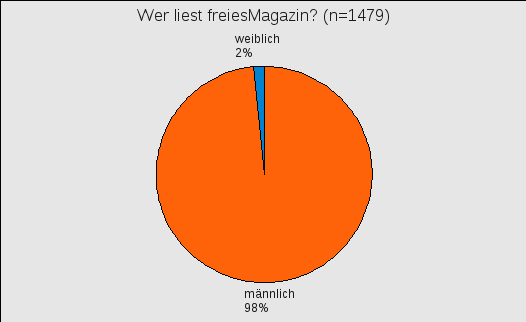
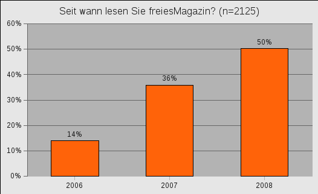
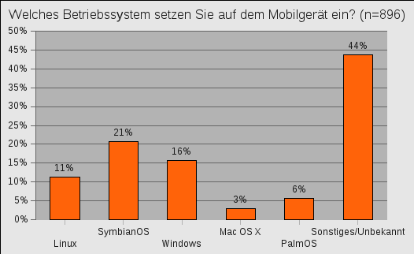
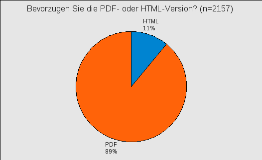
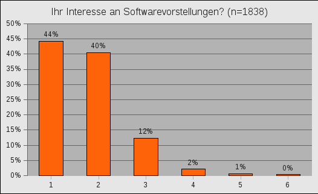
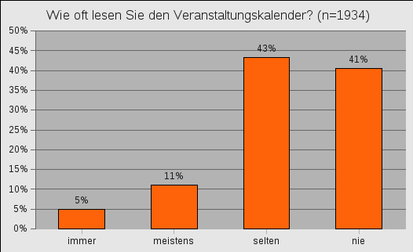

freiesMagazin März 2009 (ISSN 1867-7991)
Topthemen dieser Ausgabe
openSUSE 11.1
Fünf Monate ist es her, dass Novell mit openSUSE 11.0 eine neue Generation der Distribution herausbrachte. Kurz vor Weihnachten lieferte der Distributor eine aktualisierte Version seines Produktes aus und versprach eine Vielzahl neuer Funktionen. Nach Aussagen des Herstellers bietet die neue openSUSE 11.1 alles, was zeitgemäße Linux-Benutzer benötigen. Für den Artikel wurde sich die Boxversion der Distribution angeschaut und eine Zeitlang in produktiven Umgebungen getestet. (weiterlesen)
World of Goo - Die Bälle sind los
Kleine, teilweise saftig-grüne Goobälle kullern durch die Gegend, schlafen oder fliegen gen Himmel. Egal ob schwarze Ursuppe, luftige Höhen oder eisige Höhlen, überall trifft man auf die umherkullernden Bällchen. Aber kannst du sie wirklich alle retten? Oder müssen einige den Weg in den Goo-Himmel antreten - zum Wohle und Erhaltung ihrer ganzen Art natürlich? „World of Goo“ wird es zeigen. Für diesen Artikel wurde die Vollversion getestet. (weiterlesen)
Review: Motorola ROKR E8
Im Jahr 2008 gab es zahlreiche neue Handys auf dem Markt, ein kleiner Teil davon wurde sogar mit Linux als Betriebssystem ausgeliefert. Dieser Artikel beschäftigt sich mit dem Motorola ROKR E8, welches mit einem von Motorola angepassten Linux ausgeliefert wird. Das Gerät soll ein altes Sony Ericsson K750i ersetzen und wird an diesem gemessen. (weiterlesen)
Zum Index
Inhalt
Linux allgemein
openSUSE 11.1
LXDE im Test
Der Logical Volume Manager
Januar und Februar im Kernelrückblick
OS-Tan-Linux-Desktophintergründe
Software
World of Goo - Die Bälle sind los
Kurztipp: Songbird installieren
Kurztipp: Bastelstunde mit Pdftk
Hardware
Review: Motorola ROKR E8
Magazin
Editorial
Auswertung der freiesMagazin-Umfrage
freiesMagazin sucht Sie
Veranstaltungen
Konventionen
Vorschau
Impressum
Zum Index
Editorial
Titel Nanu, wo kommen diese lustigen Luftballons denn her? Ob die jemand vermisst? - Was? Die sind für uns? *geschmeicheltschau* - Das ist aber nett. Wäre gar nicht nötig gewesen. - Was, wäre es doch? Wieso denn? - Oh, na dann:
|
Ihre freiesMagazin-Redaktion Links
Zum Index
openSUSE 11.1
von Mirko Lindner Fünf Monate ist es her, dass Novell mit openSUSE 11.0 (Link) eine neue Generation der Distribution herausbrachte (Link). Kurz vor Weihnachten lieferte der Distributor eine aktualisierte Version seines Produktes aus und versprach eine Vielzahl neuer Funktionen. Nach Aussagen des Herstellers bietet die neue openSUSE 11.1 alles, was zeitgemäße Linux-Benutzer benötigen. Für den Artikel wurde sich die Boxversion der Distribution angeschaut und eine Zeitlang in produktiven Umgebungen getestet. Redaktioneller Hinweis: Der Artikel „openSUSE 11.1“ erschien erstmals bei Pro-Linux (Link) und wird mit freundlicher Genehmigung des Autors in freiesMagazin unter der GNU Free Documentation License (Link) veröffentlicht.Lieferumfang
Eine Besonderheit vieler openSUSE-Veröffentlichungen stellte früher die Integration kommerzieller Applikationen in das Basis-System dar. Mit der Freigabe von openSUSE 11.1 bricht der Hersteller mit dieser Tradition. Eine Neuerung der Distribution stellt die Unterteilung zwischen freier und kommerzieller Software dar. So enthält die DVD ab sofort nur noch freie Software. Anwender, die auch proprietäre Zugaben wünschen, müssen diese entweder von einem separaten Medium oder direkt aus einem Online-Verzeichnis installieren. Durch diesen Schritt erhofft sich das Team, es sowohl Entwicklern als auch Drittherstellern einfacher zu machen, auf openSUSE aufbauende Produkte zu erstellen. Dazu wurde eine neue Lizenz kreiert, die es leichter ermöglichen soll, openSUSE zu verändern und zu vertreiben. Ferner soll es auch einfacher werden, dass mittels des openSUSE Build Services auch unbedarfte Anwender spezielle openSUSE-Varianten publizieren.Installation der Paketgruppen.
Neben der eigentlichen DVD, die für 32-Bit-, 64-Bit- und PowerPC-Plattformen verfügbar ist (Link), liefert der Hersteller deshalb auch eine „Non OSS“-CD mit, auf der sich, wie der Name schon sagt, proprietäre und unfreie Software findet. Darüber hinaus steht noch eine weitere CD zum Download bereit, die zusätzliche Sprachen beinhaltet. openSUSE 11.1 setzt auf dem Kernel 2.6.27.7 und Glibc 2.9 auf. Im Paket sind darüber hinaus Python 2.6, Perl 5.10 und Mono 2.0 enthalten. Der Desktop des Produktes erfuhr ebenfalls diverse Aktualisierungen. So setzt openSUSE 11.1 GNOME 2.24.1 und KDE 4.1.3 ein.
Installation
Erste Schritte
Resultierend aus der Entscheidung der Pakettrennung änderte der Hersteller auch Lizenzbestimmungen für das Produkt. Zwar erscheint bei der Installation immer noch ein Lizenztext, dieser muss aber nicht mehr explizit akzeptiert werden. Eine weitere Neuerung, die bereits bei der Auswahl der Umgebung auffällt, ist der Verzicht auf eine prominente Auflistung von KDE 3.5. Anwender, die KDE 3.5 immer noch einsetzen wollen, finden zwar die Distribution unter dem Menüpunkt „Weitere“. Auf eine Auflistung, wie sie noch in openSUSE 11.0 stattfand, wurde in openSUSE 11.1 verzichtet. Weitere Überarbeitung erfuhr das Partitionierungswerkzeug. Zwar muss das Programm nicht zwangsläufig genutzt werden, da openSUSE 11.1 eine recht vernünftige Partitionierung bereits im Vorfeld der Installation vorschlägt, doch all jene, die Hand anlegen wollen, sollen von den Benutzbarkeitsverbesserungen profitieren. So wurden die ehemals unten angebrachten Schaltflächen komplett entfernt und in eine Menüstruktur verlagert. Viele der schon in openSUSE 11.0 vorhandenen Funktionen lassen sich somit schneller finden. Darüber hinaus haben die Entwickler dem Programm weitere Funktionalität spendiert. Die Einbindung von NFS-Verzeichnissen ist nun leistungsfähiger und ermöglicht auch weitere Optionen.Die Bearbeitung der Partitionen einmal einfach.
Weniger geglückt ist allerdings die Aufteilung des eigentlichen Installers, die besonders bei dem neuen Partitionierungswerkzeug ihre Defizite zeigt. Verbrauchte der Informationsstreifen in der alten openSUSE noch ca. 25 % des Bildinhaltes in einer Auflösung von 800x600 Pixel, so schwoll die Fläche in der aktuellen Version unnötig an und verbraucht fast ein Drittel des Platzes. Vor allem bei kleineren Auflösungen schränkt sie deshalb den eigentlich zur Installation verfügbaren Platz ein und macht viele der Benutzbarkeits-Vorteile des neuen Partitionierers durch unnötige Scroll-Aktionen zunichte. Hier wäre auf jeden Fall eine sinnvollere Platzierung der Liste, oder gar die Möglichkeit, sie abzuschalten, wünschenswert. Weitere Änderungen, eher geringfügiger und oft kosmetischer Natur, erfuhr die Paketauswahl. Angemerkt sei bei dieser allerdings, dass das „Proprietäre Software“-Schema in der OSS-Version neben den binären Firmware-Dateien für diverse Intel-Karten nur noch zwei Steuerdateien für MP3-Codecs und den Flash-Player beinhaltet. Beide Dateien installieren lediglich eine Steuerungsdatei auf dem System, die bei einem Update die eigentliche Software direkt vom Server des Distributors herunterlädt. Unverständlich ist dagegen, warum Novell die Steuerung für die proprietären True-Type-Schriften aus dem Hause Microsoft, die ebenfalls per Default installiert werden, nicht unter „Proprietäre Software“ aufführt, sondern unter „Multimedia“. Wer auf ein freies System einen besonderen Wert legt, muss daher die komplette Softwareauswahl durchgehen. Wünschenswert wäre in diesem Fall, konsequent alle proprietären Beigaben unter dem Schema „Proprietäre Software“ zusammenzutragen oder gar dem Anwender gleich bei der Desktopwahl die Option anzubieten, ob standardmäßig proprietäre Software installiert werden soll.
Konfiguration
Die wohl auffälligste Änderung der neuen Version stellt die grafische Änderung der Konfiguration dar. War sie in der alten Version noch in blauen Farben gehalten, passten die Entwickler nun auch die Konfigurationsdialoge an die neue, grüne Farbgebung an. Überarbeitet wurde ebenfalls die Konfiguration der Drucker. Novell befreite das Programm von nervenden Klickorgien und sortierte alle Funktionen in ein logisches Menü. Die Druckerkonfiguration wurde allerdings nicht nur aufgeräumt, sondern gleich um eine Vielzahl nützlicher Funktionen erweitert. So wurde unter anderem die Anbindung von Netzwerkdruckern und die Festlegung der Richtlinien oder Druckerfreigaben für CUPS erheblich vereinfacht. Darüber hinaus lassen sich direkt im Yast nun auch die Einstellungen zur Autokonfiguration durchführen. Wer in den übersichtlichen Dialogen nicht die gewünschten Funktionen findet, erhält im neuen Werkzeug die Möglichkeit, mittels eines Verbindungsassistenten weitere Optionen zu bestimmen. Zusammenfassend lässt sich sagen, dass die Anwendung zu einem sehr leistungsfähigen Werkzeug mutiert ist. Doch auch hier stört die unnötige Infoseite, die viel Platz benötigt und in kleinen Auflösungen die Konfiguration teilweise unnötig erschwert. Weitere wichtige Neuerungen sucht man allerdings in der Konfiguration vergebens. Die Änderungen sind größtenteils kosmetischer Natur und fallen kaum auf. Unter anderem wurde der Netzwerkkonfiguration eine Option spendiert, die DHCP-Version auszuwählen. Hervorzuheben wäre auch, dass die meisten Dialoge und die komplette Hilfe mittlerweile in die deutsche Sprache übersetzt wurden - bei vielen Distributionen und auch bei früheren openSUSE-Versionen keine Selbstverständlichkeit.openSUSE 11.1 im Alltagsbetrieb
Behandlung proprietärer Software
Abgesehen von den Firmware-Dateien für Intel-Karten enthält das DVD-Medium keinerlei proprietäre Software. Bereits bei der Ankündigung versprachen die Entwickler allerdings, die Einrichtung von kommerziellen Beigaben wie dem FlashPlayer oder der Unterstützung von MP3 unter openSUSE so leicht wie nur möglich zu gestalten. Die zugrunde liegende Idee ist, dass, sobald der Anwender eine Online-Aktualisierung startet oder neue Software installiert, auch die in den Augen der Entwickler wichtigen Applikationen installiert werden. Mittels sogenannter Trigger-Pakete, die nach dem Namensschema pullin_NAME aufgebaut sind, triggert die Update-Funktion einen Download der proprietären Pakete und installiert diese. Es sei hier angemerkt, dass die einzige Steuerung bei der Installation der Pullin-Pakete gegeben ist. Sobald ein solches Paket installiert wurde, besteht direkt beim Update unter GNOME nicht mehr die Möglichkeit, den Download zu unterbinden. Wer also das Standardsystem installiert, muss sich darauf einstellen, dass beim ersten Update, auch wenn nicht explizit angezeigt, die zusätzliche Software installiert wird.Einfache Installation kommerzieller Applikationen dank der automatischen Anbindung von Non-OSS-Verzeichnissen.
Smolt, Nomad und SELinux
Eine weitere Neuerung, die allerdings für den Anwender keine direkten Auswirkungen hat, stellt die Einbindung von Smolt dar. Smolt sendet grundlegende Informationen über die Hardware und das Betriebssystem an einen zentralen Server des Fedora-Projektes. Die Verbindung zwischen dem Server und dem Rechner des Benutzers stellt eine UUID dar. Persönliche Daten oder die IP-Adresse werden nicht gespeichert. Damit soll die Privatsphäre der Anwender geschützt werden und trotzdem den Herstellern die Gelegenheit gegeben sein, mehr über die eingesetzte Hardware zu erfahren. Genutzt werden die Daten nicht nur zu statistischen Zwecken, sondern auch zur Ermittlung des Bedarfs und der Optimierung der Distributionen. So soll nicht unterstützte Hardware schneller unterstützt oder Systeme, die Probleme bereiten, erkannt werden. Alle Daten des Smolt-Projektes sind öffentlich zugänglich, wobei sie nicht personenbezogen dargestellt werden.Smolt - GUI der Applikation und im Hintergrund die Auswertung auf der Seite des Projektes.
openSUSE 11.1 beteiligt sich nun auch am Aufbau der Datenbank und ermöglicht den Anwendern, ihre Daten beim Update des Systems an die Datenbank von Smolt zu senden. Zu den weiteren Neuerungen von openSUSE 11.1 gehört die Neuentwicklung Nomad (Link). Die Neuentwicklung stellt eine Remote-Desktop-Lösung von Novell dar und soll einen leichteren Zugriff auf entferne Rechner ermöglichen. Sie basiert auf RDP und DMX2. Im Gegensatz zu einer simplen Display-Umleitung unterstützt Nomad Session-Management und Compositing-Funktionen. Sofern als auf dem entfernten und lokalen Server ein Compositing-Manager gestartet wurde, kann Nomad alle Funktionen des Managers darstellen. Hinzuzufügen wäre allerdings, dass die Erweiterung im Moment noch keine OpenGL-Beschleunigung unterstützt. Auch die Stabilität und Darstellungsqualität wies bei den Tests noch Defizite auf, weshalb wohl Novell Nomad noch nicht standardmäßig installiert. Erstmals liegt openSUSE neben AppArmor auch SELinux bei. Zwar bleibt AppArmor weiterhin die bevorzugte Methode zur Abwehr von Eindringlingen, doch will es Novell allen Unternehmen und Anwendern ermöglichen, die bereits auf SELinux setzen und ihre eigenen Regeln erstellt haben, dass sie sie auch unter der neuen Produktpalette nutzen können. Ein Wermutstropfen bleibt allerdings: Von Novell explizit definierte Profile gibt es nicht.
GNOME
Der Desktop der GNOME-Umgebung gestaltet sich aufgeräumt und übersichtlich. Ein Klick auf das Startmenü zeigt keine direkte Veränderung. GNOME in openSUSE 11.1 kommt mit demselben Aussehen und derselben Struktur wie die Vorgängerversion daher. Abgesehen von den desktopspezifischen Änderungen, die GNOME 2.24 von der Version 2.22 unterscheiden, wurden diverse Novell-Programme einer Politur unterzogen. Die Struktur des Yast-Kontrollzentrums wurde verändert. Darüber hinaus weisen nun alle Werkzeuge des Systems eine Hilfe-Option auf. Die Einrichtung der Online-Aktualisierung wurde logischer gemacht. Waren früher gleich mehrere Anwendungen zur Einrichtung vorhanden, so packte Novell nun alle Aufgaben in eine Applikation. Die bereits im Installer angetroffenen Drucker-Konfigurationsänderungen finden sich nun auch in Yast wieder. Darüber hinaus wurde der Sicherheitsdialog einer Überarbeitung unterzogen. Auch hier wurde der Einrichtungsdialog übersichtlicher und macht die Konfiguration erheblich leichter. Eine nette Neuerung stellt die automatische Überprüfung von neuen Geräten dar. Wird zum Beispiel ein neues USB-Device eingesteckt, überprüft das System automatisch die Device- und Vendor-ID und versucht entsprechende Treiber zu installieren. Leider verhielt sich bei den Tests die neue Funktionalität eher durchwachsen. Die Idee als solche ist allerdings zu begrüßen und es bleibt zu hoffen, dass sich das System noch verbessern lässt.GNOME direkt nach der Installation.
KDE
Die Entwickler haben eine Menge Arbeit in die Integration von KDE4 in openSUSE gesteckt, was bis vor kurzem ja noch zu bemängeln war, und liefern ein rundum gelungenen Desktop mit. Vorbei scheinen die Zeiten zu sein, als sich GTK+ oder Qt3-Applikationen unter KDE4 wie ein Fremdkörper angefühlt haben. Einzig die Integration von Yast in KDE4 lässt noch Wünsche offen. So sind die Schriften der Applikation auf unserem Testsystem ein wenig zu klein geraten. Auch unterscheiden sich die Yast-Module grafisch von den anderen Qt-Applikationen. KDE 4.1 weist eine Vielzahl von Neuerungen und Änderungen auf. Plasma, die neue Arbeitsoberfläche, die mit KDE 4.0 eingeführt wurde, hat einen Punkt erreicht, an dem sie die alte Oberfläche von KDE3 für die meisten Benutzer ersetzen kann. Dementsprechend wurden auch diverse Plasma-Anwendungen überarbeitet. Unter anderem wurde die Einrichtung von Panels verbessert. Das neue Miniprogramm für die Ordneransicht erlaubt es, Dateien direkt auf der Arbeitsfläche zu speichern. Die Anwender haben die Möglichkeit erhalten, keine, eine oder mehrere Ordneransichten auf der Arbeitsfläche zu speichern, um einfachen Zugriff auf Dateien zu haben. Dolphin, der Dateiverwalter, hat eine neue Baumansicht in der Hauptansicht. Ebenso neu ist die Unterstützung von Tabs. Neben Änderungen an bestehenden Komponenten haben die Entwickler die aktuelle Version auch mit neuen Applikationen ausgestattet. So ist KDE 4.1 die erste KDE4-Version, welche KDE-PIM mit seinem E-Mail-Programm KMail, dem Kalender KOrganizer, dem RSS-Feed-Reader Akregator, KNode, einem Programm zum Lesen von Newsgroups, und weiteren Anwendungen mit sich bringt. Zusammengefasst verrichten alle Applikationen unter der Kontact-Oberfläche ihren Dienst. Doch nicht nur die von KDE 4.1 bekannten Applikationen haben es geschafft, in openSUSE 11.1 aufgenommen zu werden. Unter anderem finden sich in dem „openSUSE-KDE“ die Compositing-Funktionen von Kwin, PowerDevil und das automatische Verstecken des Panels aus KDE 4.2. Darüber hinaus befindet sich KDE 3.5 im Lieferumfang des Produktes. Die Qt-Version von Yast wurde nicht nur um die bereits in der Gtk-Variante beschriebenen Änderungen, sondern um weitere Funktionalität erweitert. So lässt sich nun bei der Installation eines neuen Pakets explizit nach einem darin enthaltenen Namen suchen. Auch in der Qt-Version wurden die Anwendungen logischer strukturiert.KDE 4.1 um KDE 4.2-Funktionen erweitert - hier PowerDevil und das Verstecken des Panels.
Multimedia
Das Abspielen von CSS-geschützten DVDs stellte schon immer ein Problem dar. Dass die Funktionalität nicht verfügbar ist, liegt allerdings weniger an Novell, sondern an lizenzrechtlichen Gründen. Wer allerdings ein wenig sucht, kann die benötigten Pakete schnell im Internet finden. Dasselbe gilt auch für viele andere Videoformate. Auch hier müssen die entsprechenden Dateien in Eigenregie vom Netz heruntergeladen und installiert werden. Ohne eine Nachinstallation spielt die Distribution diese Formate nicht ab. Das Abspielen von MP3-Dateien klappt dagegen dank eines Plugins von Fluendo anstandslos. Die Konvertierung von MP3-Musikstücken, wie sie zum Beispiel in K3b verwendet wird, unterstützt openSUSE dagegen immer noch nicht. Die Unterstützung von Multimedia-Formaten im Browser kann dagegen überzeugen. Sowohl Java-Applets als auch Flash verrichten ihren Dienst anstandslos. Während beim Flash die Distribution die proprietäre Software direkt vom Server herunterlädt, nutzt Novell bei Java die offenen OpenJDK 6 und IcedTea 6. Wie bereits vermutet, konnten im Browser keine sogenannten Windows-Codecs abgespielt werden. Um die fehlende Unterstützung einzubinden, bedarf es allerdings auch hier nur weniger Schritte. Ein simples Hinzufügen von zusätzlichen Repositories wie dem von Packman und die Installation der zusätzlichen Pakete behebt die Misere.Fazit
Die Basis des Projektes weist nur geringe Änderungen auf. Abgesehen von Aktualisierungen sind nur wenige neue Funktionen, die openSUSE als Alleinstellungsmerkmal auszeichnen würden, enthalten. Dasselbe Bild zeigt sich auch beim GNOME-Desktop. Wenn es die Intention des Herstellers war, openSUSE 11.0 zu stabilisieren, so ist das gelungen. Wer allerdings neue Funktionen, jenseits von Applikationsaktualisierungen erwartet, könnte von der neuen Version enttäuscht sein.
Zwei Welten - Yast2-Partitionierer aus openSUSE 11.0 (oben) und openSUSE 11.1 (unten).
Ein anderes Bild zeigt sich dagegen beim KDE-Desktop. Die Version 4.1 der Umgebung gepaart mit Novells Änderungen überzeugt, auch wenn sie noch die eine oder andere Schwäche hat. Zusammenfassend hinterlässt sie aber einen sehr positiven Eindruck und jeder, der bereits KDE4 unter openSUSE 11.0 eingesetzt hat, sollte der neuen Version zweifelsfrei den Vorzug geben, denn Novell gelang es, KDE 4.1 in openSUSE 11.1 fast schon perfekt einzubinden. Doch auch Neu- und Umsteiger finden in openSUSE 11.1 ein durchaus gelungenes System vor, das durch eine aktuelle Software-Auswahl, durchdachte Bedienung und ein konzeptionell gelungenes Konfigurationsprogramm punktet. Die Aufsplittung zwischen den freien und kommerziellen Paketen ist gelungen. Abgesehen von kleineren Designschwächen bei der Installation gab es nur wenig zu beanstanden. Links
- http://de.opensuse.org/
- http://www.pro-linux.de/berichte/opensuse110.html
- http://www.pro-linux.de/berichte/opensuse111.html
- http://www.gnu.org/copyleft/fdl.html
- http://software.opensuse.org/
- http://en.opensuse.org/Nomad
- http://de.opensuse.org/Dokumentation
- http://de.opensuse.org/SDB:SDB
| Autoreninformation |
| Mirko Lindner befasst sich seit 1990 mit Unix. Seit 1998 ist er aktiv in die Entwicklung des Kernels eingebunden und verantwortlich für diverse Treiber und Subsysteme für Linux und andere freie Plattformen. Daneben ist er einer der Betreiber von Pro-Linux.de. |
LXDE im Test
von Daniel Schneider LXDE steht für „Lightweight X11 Desktop Environment“ (leichtgewichtige Desktopumgebung) und der Name ist Programm: Der junge Desktop (Link) vereint nützliche Programme unter dem Aspekt optimaler Geschwindigkeit sowie geringen Ressourcenverbrauchs. Dadurch tritt LXDE gleichermaßen in Konkurrenz zu reinen Fenstermanagern und größeren Desktopumgebungen wie GNOME oder Xfce. Hier ein Blick auf die neue Desktopumgebung. Redaktioneller Hinweis: Der Artikel „Die Nr. 4 unter den Linux-Desktops: LXDE im Test“ erschien erstmals auf der Seite „Pinguinzubehör“ (Link) und wird mit freundlicher Genehmigung des Autors in freiesMagazin unter der GNU Free Documentation License (Link) veröffentlicht. Wie viele Desktops gibt es für Linux? Bis vor einiger Zeit konnte man guten Gewissens sagen: zwei. Nämlich GNOME und KDE. Dann wurden in Xfce Arbeitsflächensymbole eingebaut und voilà: aus dem Fenstermanager mit Startleiste wurde Linux-Desktop Nr. 3. Seit neuestem gibt es eine Nummer 4: LXDE.Der erste Eindruck
LXDE hat auf den ersten Blick - da es auch auf GTK als Oberfläche setzt - eine große Ähnlichkeit mit Xfce, bringt aber das Wunder fertig, noch schneller und leichtgewichtiger zu sein als dieses. Was eigentlich kein Kunststück ist, denn auch Xfce, seit langem vor allem als leichtere Alternative zu GNOME empfohlen, ist mittlerweile ganz schön groß geworden. Die Unterschiede zwischen GNOME und Xfce fallen nicht mehr so gravierend aus, vor allem, seitdem der GNOME-Dateimanager Nautilus immer schneller wird.
Der LXDE-Desktop.
Das Prinzip: Geschwindigkeit
Doch wie schafft Xfce es, einen derart schnellen Desktop zu bauen, der ein aktuelles Linux endlich mal so schnell werden lässt wie ein Windows XP? Die Lösung ist einfach. Während die etablierten Desktopumgebungen das Rad immer neu erfinden, sämtliche Programme für die eigene Oberfläche neu programmieren, damit am Ende alles aus einem Guss wirkt, geht LXDE den umgekehrten Weg: Es nimmt die besten, schnellsten und schon längst vorhandenen freien Programme, modifiziert sie womöglich noch leicht und strickt daraus dann einfach einen vollwertigen Desktop. Damit verwirklicht LXDE ein typisches „Linuxprinzip“: LXDE könnte man daher auch als „Distribution in der Distribution“ bezeichnen. LXDE besteht tatsächlich also aus vielen Einzelkomponenten, die auch einzeln in „freier Wildbahn“ erhältlich sind, die für den LXDE-Desktop aber optimal kombiniert wurden.Das Desktop-Puzzle
Als zentralen Baustein nutzt LXDE den Dateimanager PCManFM, der schon lange vor Nautilus oder Dolphin Tabs beherrschte, und Thunar, Nautilus oder Dolphin in Sachen Geschwindigkeit trotzdem alt aussehen lässt. Die Symbole können sich sehen lassen: statt selbst an Icons herumzudoktern, bis etwas Gräuliches wie bei GNOME oder etwas Grelles wie bei KDE herauskommt, hat man sich einfach das geschnappt, was den derzeitigen Massengeschmack am ehesten treffen dürfte und zugleich sowohl frisch als auch elegant-dezent wirkt: die nuoveXT-Icons (Link). Der Fenstermanger ist Openbox (Link), ein Verwandter von Fluxbox und Blackbox, den viele wegen seiner Vielfältigkeit sogar ganz ohne restlichen Desktop einsetzen. Als Start- und Fensterleiste kommt das flinke Fbpanel (Link) zum Einsatz. Zum Standard-Texteditor wurde Leafpad (Link) gemacht. Zum Packen nimmt man Xarchiver, ein Komprimier- und Entpackprogramm. Dazu packt LXDE z. B. noch einen eigenen Taskmanager, einen Programm-Ausführen-Dialog, ein Terminalprogramm und einen Theme-Konfigurator - und fertig ist der Desktop.PCManFM mit nuoveXT-Icons und Openbox-Fensterrahmen.
Im Übrigen verfolgt LXDE einen sympathisch-pragmatischen Ansatz. Es folgt z. B. dem Prinzip „Sei nicht anders als GNOME oder Windows, nur um anders zu sein als GNOME oder Windows“. Und dies funktioniert wunderbar: Man erhält mit LXDE eine intuitiv zu bedienende Linuxoberfläche, mit der man ohne Weiteres gut zurechtkommt und die dazu auch noch wirklich gut aussieht. Für ein recht junges Desktop-Projekt wie LXDE sehr überzeugend.
Übersichtliche LXDE-Systemüberwachung und Texteditor Leafpad.
Bestehende Nachteile
Vom Optimum ist LXDE trotzdem noch weit entfernt, es gibt derzeit noch einige Nachteile, die dem frühen Entwicklungsstand des Projekts zugeschrieben werden müssen. Vor allem beim Desktop-Komfort muss man Einschränkungen hinnehmen. Die Desktopsymbole können nicht frei bewegt werden, sondern positionieren sich stets statisch in einer Reihe. Das Panel - oder sein Startmenü - kann nicht leicht angepasst oder modifiziert werden (z. B. mit einem Kontextmenüklick), hierzu ist umständliche Handarbeit mit Systemdateien erforderlich. Um eigene Panel-Symbole zu generieren, ist das Ablegen einer DESKTOP-Datei (.desktop) im Ordner ~/.local/share/applications erforderlich. Auch für globale Tastenkürzel gibt es keinen Dialog; um diese anzulegen, muss man die Datei ~/.config/openbox/lcde-rc.xml editieren. Durchaus erwähnenswert: Das Projekt-Logo, das sich auch auf den mitgelieferten Standard-Hintergründen wiederfindet, ist gruselig und erinnert an irgendein Spinnentier.Ist das gefährlich? Oder nur gesponsert vom Kammerjägerbundesverband? Das LXDE-Logo.
Verbreitung
Fedora installiert LXDE seit Fedora 10 neben KDE und GNOME standardmäßig mit, bei openSUSE, Debian und Ubuntu lässt es sich über die regulären Paketquellen einfach nachinstallieren. Auch bei Mandriva ist es derzeit nur nachträglich zu bekommen, die nächste Mandriva-Version wird LXDE jedoch regulär anbieten; dort soll es das bislang als Alternative für schwächere Rechner präferierte IceWM ersetzen. Besonders herausstechend: Das neue Knoppix hat seinen bisherigen Standarddesktop, KDE, komplett durch LXDE ersetzt.Fazit
Trotz noch bestehender kleiner Unannehmlichkeiten: LXDE ist ein guter Kompromiss zwischen den völlig spartanischen Fenstermanagern ganz ohne Desktop (IceWM, Fluxbox etc.) und den Schwergewichten KDE oder GNOME, die allesamt Schnickschnack mitladen, den man kaum je komplett brauchen wird und der in der Summe dafür sorgt, dass jeder mögliche Geschwindigkeitsgewinn schnell verpufft. Hier kann LXDE seinen minimalistischen Ansatz voll ausspielen. Redaktioneller Hinweis: Es ist unklar, welcher Lizenz das LXDE-Logo wirklich unterliegt. Es ist entweder die „Creative Commons Attribution-Share Alike 3.0 Unported License“ (Link) wie die LXDE.org-Webseite (Link), die GNU General Public License (Link) wie auf Wikimedia Commons (Link) oder die GNU Free Documentation License 1.2 (Link) wie im LXDE-Wiki (Link). So ein Durcheinander macht es den Zeitschriften-Redakteuren im Übrigen nicht leichter ... Links{kind=link}
- http://www.lxde.org/
- http://www.knetfeder.de/linux/index.php?id=36
- http://www.gnu.org/copyleft/fdl.html
- http://nuovext.pwsp.net/
- http://icculus.org/openbox/
- http://fbpanel.sourceforge.net/
- http://tarot.freeshell.org/leafpad/
- http://creativecommons.org/licenses/by-sa/3.0/
- http://www.gnu.org/licenses/gpl.html
- http://commons.wikimedia.org/wiki/File:LXDE_logo.jpg
- http://wiki.lxde.org/en/LXDE_Design
| Autoreninformation |
| Daniel Schneider nutzt Linux seit 2003 privat und beruflich, entwirft Iconsets für Claws-Mail und schreibt unter dem Stichwort „Pinguinzubehör“ auch über das freie Betriebssystem mit einem Schwerpunkt auf Anwenderfreundlichkeit, Design und Bedienung. |
Der Logical Volume Manager
von Michael Singer Der Logical Volume Manager (LVM) ist eine logische Schicht zwischen der physikalischen Festplatte und dem Dateisystem. Das macht es überhaupt erst möglich, mehrere Festplatten einer logischen Disk zuzuordnen. Partitionen oder ganze Festplatten können zu einem Physical Volume (kurz PV) zusammengefasst werden. In einer Volume Group (kurz VG) sind ein oder mehrere PVs zusammengefasst. Der entscheidende Vorteil gegenüber einem Linuxsystem ohne LVM ist die Erweiterbarkeit eines Dateisystems im laufenden Betrieb. Dies wird durch ein Logical Volume (kurz LV) erreicht, in dem ein beliebiges Linuxdateisystem (ext2, ext3, reiserfs, xfs, jfs usw.) angelegt werden kann. Hinweis: Dieser Artikel richtet sich an erfahrene Anwender, die sicher mit der Kommandozeile umzugehen wissen. In jedem Fall sollte eine Datensicherung durchgeführt werden, bevor man mit den Arbeiten beginnt. Der Autor hat den Installationsablauf mehrmals getestet und nach bestem Wissen dokumentiert.Die Schichten des LVM
Der LVM wird hauptsächlich im Serverbereich eingesetzt, da hier eine hohe Plattenkapazität mit vielen Disks die nötige Flexibilität bringt. Aber auch für einen normalen Desktop-PC lohnt die Installation des LVM, wenn man den vorhandenen Festplattenplatz effektiv aufteilen möchte oder mehr als eine Festplatte verbaut ist.- Die Festplatten sda, sdb, sdc und sdd sind in einer Volumegruppe sysvg.
- Die Volumegruppe sysvg nimmt die logischen Volumes LVhome, LVtmp, LVusr und LVvar auf.
- Die einzelnen Logical Volumes enthalten wiederum die Dateisysteme, wie z. B. das Dateisystem /dev/sysvg/LVhome, das unter /home im Verzeichnisbaum eingehängt ist.
Die Schichten des LVM.
Installation des LVM
Einige Linuxdistributionen bieten schon bei der Installation eine Implementierung des LVM an, die sehr an die jeweiligen Gegebenheiten der Distribution angepasst sind und nicht auf andere übertragen werden können. Beschrieben wird hier eine nachträgliche Installation auf einem konventionell installierten Linux mit zwei primären Partitionen. Die nachfolgenden Schritte beschreiben die Aktionen die durchzuführen sind.- Vorhandene persönliche Daten sichern
- LVM installieren
- Verzeichnisse /home, /tmp, /usr und /var temporär auf externe Festplatte auslagern
- Größe der internen Festplattenpartition anpassen
- zweite Partition für den LVM erstellen
- LVM einrichten
- Zurückkopieren der ausgelagerten Daten in die LVM-Partition
- Systemdateien anpassen
Ausgangssituation
Die Festplatte /dev/sda mit einer Gesamtkapazität von 15 GByte beinhaltet zwei primäre Partitionen, eine für das System mit 14 GByte und eine zweite, die als Swap dient, mit 1 GByte. Es sind keine freien Blöcke mehr auf der Festplatte vorhanden.Endergebnis
Nach der LVM-Installation und einer teilweisen Neupartitionierung soll auf der Festplatte eine primäre Partition mit 1,5 GByte (sda1) für das Rootfilesystem und eine zweite primäre (sda2) für den LVM mit 13,5 GByte vorhanden sein. In der zweiten primären Partition werden die Verzeichnisse /home, /tmp, /usr und /var jeweils in eigene Dateisysteme ausgelagert. Die Swap-Partition läuft ebenfalls unter LVM-Kontrolle. Die Root-Partition kommt nicht unter LVM-Kontrolle, da dies einen unverhältnismäßig hohen Aufwand erzeugen würde und bei späteren Kernelupdates Probleme bereiten könnte. Ebenso kann das /boot-Verzeichnis keine LVM-Partition werden, weil der Bootmanager GRUB keine LVM-Devices als Startpartition unterstützt.Vorarbeiten
Um den LVM nachträglich zu installieren, benötigt man eine sogenannte Live-CD, wie z. B. Knoppix oder Sidux, die den LVM von Haus aus unterstützen. Im nachfolgenden Ablauf wird die Sidux Live-CD benützt. Dies ist nötig, weil die Arbeiten bei einem laufenden System nicht durchgeführt werden können. Persönliche Daten bitte vor dieser Aktion unbedingt auf einem geeigneten Medium sichern. Eine zweite interne oder externe Festplatte ist ebenfalls nötig, um die Daten aus den Systemverzeichnissen vorübergehend auf einem temporären „Parkplatz“ abzustellen. Bevor man mit den eigentlichen Arbeiten beginnt, bitte nochmals kontrollieren, ob auf dem eigenen System bereits der LVM installiert ist. Dazu befragt man am besten den Paketmanager des Systems. Bei debianbasierten System benutzt man dazu den Befehl dpkg: # dpkg -l - grep -i lvm ii lvm2 2.02.39-2 The Linux Logical Volume ManagerWenn der LVM installiert ist, bekommt man mit oben genannten Befehl eine ähnliche Ausgabe. Wenn nicht, bitte nachinstallieren mit dem systemeigenen Paketmanager. Bei einem debianbasierten System wie Sidux erledigt man dies so: # apt-get install lvm2
Nun steht den nachfolgenden Umbauarbeiten nichts mehr im Weg.
Live-System starten
Nun legt man die Sidux-Live-CD ein und bootet das System. Wenn das Livesystem hochgefahren ist, öffnet man eine Konsole und meldet sich als Root an. Zuerst werden die Verzeichnisse, die man später in eigene Dateisysteme unter LVM-Kontrolle auslagern will, temporär auf die externe Festplatte (sdb) kopiert. Das sind die Verzeichnisse /home, /tmp, /usr und /var. Einbinden der Partitionen /dev/sda1 und /dev/sdb1: # mkdir /media/sda1 /media/sdb1 # mount /dev/sda1 /media/sda1 # mount /dev/sdb1 /media/sdb1Kopieren der Verzeichnisse auf die externe Festplatte: # mkdir /media/sdb1/home # mkdir /media/sdb1/tmp # mkdir /media/sdb1/usr # mkdir /media/sdb1/var # cd /media/sda1/home # tar -cSpf - . - tar -xvSpf - -C /media/sdb1/home # cd /media/sda1/tmp # tar -cSpf - . - tar -xvSpf - -C /media/sdb1/tmp # cd /media/sda1/usr # tar -cSpf - . - tar -xvSpf - -C /media/sdb1/usr # cd /media/sda1/var # tar -cSpf - . - tar -xvSpf - -C /media/sdb1/var
Wenn alle zu verlagernden Verzeichnisse kopiert sind, kann man auf der ursprünglichen Festplatte /dev/sda1 die Daten löschen: # rm -r /media/sda1/home # rm -r /media/sda1/tmp # rm -r /media/sda1/usr # rm -r /media/sda1/var
Jetzt sind nur noch die Systemdaten auf der ersten primären Festplatte (sda1), die später das Root-Dateisystem bilden sollen. Der nächste Schritt wird sein, die vorhandene Partition (sda1) zu verkleinern, um Platz zu schaffen für die LVM-Partition. Vor der Verkleinerung des Dateisystems wird die Partition wieder ausgehängt: # umount /media/sda1
Mit dem Partitionseditor gparted wird /dev/sda1 soweit wie möglich verkleinert plus einer Sicherheitsreserve. Man richtet sich nach der jetzigen Größe des Wurzelverzeichnisses (hier ca. 500 MByte) und verdreifacht das Ganze nochmals (hier auf ca. 1500 MByte). Mit maximal 2 GByte für das Rootdateisystem ist man auf der sicheren Seite. In gparted klickt man mit der rechten Maustaste auf die Partition sda1 und wählt den Punkt „Resize/Move“ aus. In dem sich öffnenden Dialog gibt man die neue Größe (hier 1500 MByte) unter „New Size“ an und bestätigt mit „Größe ändern/verschieben“. Im Menü „Edit“ wählt man den Menüpunkt „Apply all operations“ aus, um die zuvor durchgeführten Aktionen zu bestätigen. Erst jetzt wird die Partition wirklich verkleinert. Diese Aktion kann einige Minuten in Anspruch nehmen. Nach erfolgreicher Verkleinerung muss die alte Swap-Partition gelöscht werden, denn diese wird später innerhalb des LVM aktiv sein. Mit der rechten Maustaste auf sda2 (linux-swap) klicken und die Swap-Partition abschalten (Auswahlpunkt „swapoff“). Jetzt kann man im Kontextmenü der Partition sda2 den deaktivierten Swap löschen. Auf dem restlichen verfügbaren Plattenplatz wird eine unformatierte zweite primäre Partition angelegt mit 13,5 GByte (sda2). Dazu den mit „unbekannt“ bezeichneten Eintrag mit der Maus markieren und im Kontextmenü den Punkt „Neu“ auswählen. In dem darauf folgenden Dialog unter „Erstellen als“ eine „Primäre Partition“ auswählen und unter „Dateisystem“ „unformatted“ aktivieren. Wirklich ausgeführt werden die Aktionen, wenn im Menü „Edit“ der Eintrag „Apply all operations“ auswählt wird. Sobald alles erfolgreich abgeschlossen wurde, muss nur noch der Partitionstyp LVM von sda2 gesetzt werden. Dazu mit der rechten Maustaste auf die sda2 Partition und unter „Managed Flags“ den Typ LVM auswählen. gparted kann nun beendet werden. In der Konsole wird der LVM jetzt eingerichtet und konfiguriert. Den LVM aktiviert man mit zwei Befehlen: # vgscan # vgchange -a y
Ein Physical Volume mit der physikalischen Festplattenpartition sda2 erzeugen: # pvcreate /dev/sda2
Eine Volume Group mit dem sprechenden Namen sysvg anlegen: # vgcreate sysvg /dev/sda2
Jetzt erzeugt man die Logical Volumes für /home, /tmp, /usr und /var. Die Option -L gibt die Größe in MByte (M) bzw. GByte (G) an. Die Option -n bezeichnet das LVM-Device mit einem beliebigen Namen. Am besten wählt man einen aussagekräftigen Bezeichner, der den Inhalt des Volumes beschreibt. Die Größen für die einzelnen Dateisysteme müssen dabei an die eigenen Gegebenheiten angepasst werden: # lvcreate -L 1G -n /dev/sysvg/LVhome # lvcreate -L 256M -n /dev/sysvg/LVtmp # lvcreate -L 3G -n /dev/sysvg/LVusr # lvcreate -L 2G -n /dev/sysvg/LVvar # lvcreate -L 1G -n /dev/sysvg/LVswap
Mit dem Kommando lvdisplay kann man sich die soeben erzeugten LVs auflisten lassen: # lvdisplay - Logical volume - LV Name /dev/sysvg/LVhome VG Name sysvg [...]
Nun müssen die Volumes mit einem ext3-Dateisystem versehen werden. Dazu verwendet man den Befehl mkfs: # mkfs.ext3 /dev/sysvg/LVhome # mkfs.ext3 /dev/sysvg/LVtmp # mkfs.ext3 /dev/sysvg/LVusr # mkfs.ext3 /dev/sysvg/LVvar
Die Swap-Partition wird ebenfalls mit dem angelegten Logical Volume LVswap initialisiert: # mkswap/dev/sysvg/LVswpa
Um nun die ausgelagerten Systemdateien wieder auf die ursprüngliche Festplatte (sda1) zu bekommen, sind die Verzeichnisse /home, /tmp, /usr und /var anzulegen, die Dateisysteme einzuhängen, Rechte zu setzen und danach zurück zu kopieren: # mount /dev/sda1 /media/sda1 # cd /media/sda1 # mkdir home tmp usr var # chown root.root home tmp usr var # chmod 755 home usr var
# chmod 1777 tmp # mkdir /media/LVhome # mkdir /media/LVtmp # mkdir /media/LVusr # mkdir /media/LVvar # mount /dev/sysvg/LVhome /media/LVhome # mount /dev/sysvg/LVtmp /media/LVtmp # mount /dev/sysvg/LVusr /media/LVusr # mount /dev/sysvg/LVvar /media/LVvar # cd /media/sdb1/home # tar -cSpf - . - tar -xvSpf - -C /media/LVhome # cd /media/sdb1/tmp # tar -cSpf - . - tar -xvSpf - -C /media/LVtmp # cd /media/sdb1/usr # tar -cSpf - . - tar -xvSpf - -C /mediaLVusr # cd /media/sdb1/var # tar -cSpf - . - tar -xvSpf - -C /media/LVvar
Das Kopieren aller Verzeichnisse dauert eine geraume Zeit, da hier sehr viele Dateien betroffen sind. Der Hauptteil der Umstellungsarbeiten ist geschafft. Nun muss noch die fstab an die neuen Gegebenheiten angepasst werden. Die Datei /media/sda1/etc/fstab wird mit Root-Rechten in einem Editor geöffnet und mit den zusätzlichen Dateisystemen versehen. Die alten Einträge bitte entfernen, lediglich vorhandene Zeilen zum CD-ROM- und Floppylaufwerk können darin verbleiben. /dev/sda1 / ext3 defaults,errors=remount-ro,noatime 0 1 /dev/sysvg/LVswap none swap sw 0 0 /dev/sysvg/LVhome /home ext3 defaults 0 2 /dev/sysvg/LVtmp /tmp ext3 defaults 0 2 /dev/sysvg/LVusr /usr ext3 defaults 0 2 /dev/sysvg/LVvar /var ext3 defaults 0 2
Das Root-Dateisystem kann auch mit einer UUID eingetragen werden, anstatt des Devicepfades /dev/sda1 (UUID an die eigenen Gegebenheiten anpassen). Die Zeile in der fstab würde dann so aussehen: UUID=b22e0b4a-ef2a-4ff6-bbf4-9e56738c7f1a / ext3 defaults,errors=remount-ro,noatime 0 1
Damit der LVM beim Booten zur richtigen Zeit gestartet wird, müssen die Initskripte des LVM in den Verzeichnissen /etc/rc* der späteren Rootplatte kontrolliert werden. # find /media/sda1/etc/rc* /media/sda1/etc/rc0.d/S50lvm2 /media/sda1/etc/rc6.d/S50lvm2 /media/sda1/etc/rcS.d/S26lvm2
Wenn der LVM bereits installiert ist, sollte das Initskript in den Runlevel-Verzeichnissen korrekt verlinkt sein. Sollte dies nicht der Fall sein, muss man die symbolischen Links mit dem Befehl ln setzen: # cd /media/sda1/etc/rc0.d # ln -s ../init.d/lvm2 S50lvm2 # cd /media/sda1/etc/rc6.d # ln -s ../init.d/lvm2 S50lvm2 # cd /media/sda1/etc/rcS.d # ln -s ../init.d/lvm2 S26lvm2
Die symbolischen Links können bei anderen Linuxdistributionen zum Teil etwas anders aussehen. Informationen zu den Standard-Start- bzw. Stopp-Skripten des LVM sind im Initskript unter /media/sda1/etc/init.d/lvm2 nachzulesen (siehe die Zeilen „Default-Start“ und „Default-Stop“). #!/bin/sh ### BEGIN INIT INFO # Provides: lvm2 lvm [...] # X-Stop-after: umountfs # Default-Start: S # Default-Stop: 0 6 ### END INIT INFO [...]
Aufräumarbeiten
Bevor nun das Originalsystem wieder gestartet werden kann, muss vorher noch etwas aufgeräumt werden. Dazu die temporären Dateisysteme aushängen und den LVM stoppen: # umount /media/LVhome # umount /media/LVtmp # umount /media/LVusr # umount /media/LVvar # umount /dev/sda1 /dev/sdb1 # vgchange -a n # /etc/init.d/lvm2 stopNun zeigt sich, ob die Umbauarbeiten erfolgreich verlaufen sind. Das Live-System wird heruntergefahren und die CD aus dem Laufwerk entfernt. Anschließend wird das LVM-System gebootet und df zeigt Folgendes: # df -h Dateisystem Größe Benut Verf Ben% Eingehängt auf /dev/mapper/sysvg-LVhome 1008M 34M 923M 4% /home /dev/mapper/sysvg-LVtmp 248M 11M 226M 5% /tmp /dev/mapper/sysvg-LVusr 3,0G 1,3G 1,6G 47% /usr /dev/mapper/sysvg-LVvar 2,0G 184M 1,7G 10% /var
Die ausgelagerten Dateisysteme laufen jetzt unter LVM-Kontrolle, was an den Devicepfaden /dev/mapper/* zu erkennen ist.
Erweiterung
Zum Schluss noch ein Hinweis, wie man ein LVM-Dateisystem anpasst, d. h. im laufenden Betrieb erweitert. Die Vergrößerung erfolgt in zwei Schritten. Als Erstes muss das Logical Volume (LV) erweitert werden, dann wird das Dateisystem /home um 1 GByte auf eine Gesamtgröße von 2 GByte erweitert: # lvextend -L +1G /dev/prodvg/LVhome # resize2fs /dev/sysvg/LVhomeDer Befehl resize2fs zum Vergrößern eines Dateisystems kann nur für den Typ ext2 und ext3 verwendet werden. Für andere Dateisysteme gibt es äquivalente Kommandos. Links
- http://www.howtoforge.de/howto/lvm-anleitung-fur-anfanger/
- http://www.selflinux.org/selflinux/html/lvm.html
- http://www.linux-fuer-alle.de/doc_show.php?docid=216
| Autoreninformation |
| Michael Singer arbeitet seit Anfang der neunziger Jahre mit Linux unter verschiedenen Distributionen. Seit Ende 2006 ist seine Arbeitsplattform die debianbasierte Linuxdistribution Sidux. Beruflich arbeitet er im Second-Level-Support (Unix) eines bayerischen IT-Dienstleisters. |
Januar und Februar im Kernelrückblick
von Mathias Menzer Basis aller Distributionen ist der Linux-Kernel, der fortwährend weiterentwickelt wird. Welche Geräte in einem halben Jahr unterstützt werden und welche Funktionen auf einen zukommen, erfährt man, wenn man den aktuellen Entwickler-Kernel im Auge behält. Nachdem Kernelversion 2.6.28 zwischen den Jahren erschienen war (siehe „Kernelrückblick“, freiesMagazin 01/2009 (Link)), wurde das Merge Window, der Zeitraum in dem Neuerungen in den kommenden Kernel aufgenommen werden um ein paar Tage verlängert, um der besinnlichen Zeit Rechnung zu tragen und den Entwicklern nach der Urlaubszeit genügend Luft für das Einreichen von Merge Requests zu lassen. Nichtsdestotrotz erschien Mitte Januar 2.6.29-rc1 (Link) und lieferte auch gleich einen Ausblick darauf, was man von dem neuen Kernel erwarten darf. Dazu gehören unter anderem die beiden Dateisysteme btrfs (Link) und SquashFS (Link). Während btrfs, ursprünglich aus dem Hause Oracle, besonders fehlertolerant und sehr performant sein soll, ist SquashFS für die Verwendung auf Live-CDs ausgelegt. Es ist nur lesbar, unterstützt dafür aber auch Komprimierung. Ein guter Teil der neuen Treiber stammt aus Kroah-Hartmans staging-Zweig, in dem nun seit einem halben Jahr Entwicklungen von dritten eine Heimat haben, die von der Aufnahme in den aktuellen Entwickler-Kernel noch weit entfernt sind (siehe „Kernelrückblick“, freiesMagazin 07/2008 (Link)). Darin gereift sind zum Beispiel die Treiber für Ralinks RT2860- und RT2870-Chipsätze oder den RTL8187se-Chip von Realtek, der vor allem in verschiedenen Netbooks eingesetzt wird. Atheros USB-WLAN-Chips werden nun vom otus-Treiber unterstützt, auch für Airgos AGNX00-Chip ist nun ein Treiber vorhanden und wlan-ng hat umfangreiche Korrekturen erfahren. Leider bestanden im 2.6.29-rc1 Probleme mit der 3-D-Grafik auf vielen Geräten, die mit 2.6.29-rc2 korrigiert wurden (Link). Torvalds erhoffte sich von dieser Version eine „normale RC1-Qualität“. Die weitere Entwicklung bis zu RC6 beinhaltete in erster Linie Korrekturen und Verbesserungen, die der Stabilität des Kernels dienen sollten. So wurden einige Fehler des Grafiktreibers i915, des ALSA-Soundsystems sowie der Dateisysteme btrfs und xfs behoben. Auch an der Videokomponente V4L/DVB wurde fleißig gearbeitet. Torvalds Favorit all dieser Änderungen waren allerdings die Bemühungen, dem PCI-Subsystem zu einer besseren Stabilität beim Weg in den Schlafmodus (Suspend) und beim Erwachen (Resume) führen sollen - sein Notebook zumindest führt diese Aktionen nur fehlerfrei aus. Das Volumen der Änderungen hat insgesamt zu 2.6.29-rc6 hin abgenommen, sodass sich der kommende Kernel zumindest der Zielgeraden nähern dürfte. Anhänger von Ubuntu mussten jedoch die Nachricht hinnehmen, dass die für April vorgesehene Version „Jaunty Jackalope“ nicht auf den neuesten Kernel setzen wird (Link). Stattdessen kommt noch der Weihnachtskernel 2.6.28 zum Zuge, was mit dem potentiell geringen Zeitraum zwischen der Veröffentlichung von 2.6.29 und Ubuntu 9.04 begründet wird, in dem eventuelle Probleme nur schwer zu beheben seien. Links- http://www.freiesmagazin.de/freiesMagazin-2009-01
- http://lkml.org/lkml/2009/1/10/274
- http://de.wikipedia.org/wiki/Btrfs
- http://de.wikipedia.org/wiki/Squashfs
- http://www.freiesmagazin.de/freiesMagazin-2008-07
- http://lkml.org/lkml/2009/1/16/416
- http://ikhaya.ubuntuusers.de/2009/02/12/neuigkeiten-zum-kernel-der-ubuntu-version-jaunty-jackalope/
| Autoreninformation |
| Mathias Menzer wirft gerne einen Blick auf die Kernel-Entwicklung, um mehr über die Funktion von Linux zu erfahren und seine Mitmenschen mit seltsamen Begriffen und unverständlichen Abkürzungen nerven zu können. |
OS-Tan-Linux-Desktophintergründe
von Dominik Wagenführ Desktophintergründe gibt es sicher wie Sand am Meer. Gute Desktophintergründe etwas seltener, wobei das meistens im Auge des Betrachters liegt. Diesen Monat haben ein paar OS-Tan-Bilder meine Aufmerksamkeit erregt. Unter OS-Tan (Link) versteht man die Verallgemeinerung des „Moe-Anthropomorphismus“ (Link), bei dem Gegenstände, Sachen oder Tiere in Form von meist weiblichen Comicfiguren im Manga-Stil (Link) dargestellt werden. Bei OS-Tan handelt es sich dabei, wie der Name sagt, um die Darstellung von Betriebssystemen („Operating Systems“).OS-Tan Slackware. © Francesca Poppi (CC-BY-NC-2.5)
Die italienische Webdesignerin und Grafikerin Francesca „juzo-kun“ Poppi hat sich ebenfalls dem Thema angenommen, die Besonderheit liegt aber in der Wahl der Systeme, denn sie setzt fast ausschließlich Linux-Betriebssysteme als OS-Tan um. Auf ihrer Webseite (Link) findet man daher sehr gute Desktophintergründe für die Distributionen Arch Linux, Debian, Fedora, Gentoo, Knoppix, Mandriva, Red Hat, Slackware, Suse, Ubuntu und Linux allgemein. Es ist hoffentlich für jeden Linux-Nutzer ein passendes Bild dabei.
OS-Tan Suse. © Francesca Poppi (CC-BY-NC-2.5)
Eine weitere Besonderheit ist, dass ihre Zeichnungen alle unter der „Creative Commons Attribution-Noncommercial 2.5 Generic“-Lizenz (Link) veröffentlicht werden. Jeder darf sie also zu nicht-kommerziellen Zwecken benutzen, verändern und verbreiten, solange er Francesca Poppi als Urheberin angibt. Auf ihrer devianArt-Seite (Link) gibt es noch weitere sehr gute Zeichnungen und Bilder.
OS-Tan Ubuntu. © Francesca Poppi (CC-BY-NC-2.5)
Links
- http://en.wikipedia.org/wiki/OS-tan
- http://en.wikipedia.org/wiki/Moe_anthropomorphism
- http://de.wikipedia.org/wiki/Manga
- http://www.jkhp.it/OS-tan/desktops.htm
- http://creativecommons.org/licenses/by-nc/2.5/
- http://juzo-kun.deviantart.com/
World of Goo - Die Bälle sind los
von Dominik Wagenführ Kleine, teilweise saftig-grüne Goobälle kullern durch die Gegend, schlafen oder fliegen gen Himmel. Egal ob schwarze Ursuppe, luftige Höhen oder eisige Höhlen, überall trifft man auf die umherkullernden Bällchen. Aber kannst du sie wirklich alle retten? Oder müssen einige den Weg in den Goo-Himmel antreten - zum Wohle und Erhaltung ihrer ganzen Art natürlich? World of Goo (Link) wird es zeigen. Für diesen Artikel wurde die Vollversion getestet.Das Spiel
Spielprinzip
World of Goo ist ein überaus interessantes Computerspiel, welches Mitte letzten Jahres auf den Markt gekommen ist. Die Idee bei dem Spiel ist so simpel wie unterhalsam: Man baut aus sogenannten Goobällen Türme, Brücken und sonstige Verbindungen, um in einem Level an einen besonderen Punkt (meist eine Rohröffnung) zu gelangen. Über diese können alle nicht benutzten Bälle in die Freiheit entschwinden. Die Gebilde verhalten sich dabei physikalisch korrekt. So neigt sich ein Turm stark nach rechts, wenn man ihn eben sehr rechtslastig baut. Zusätzlich wuseln auf den Querstreben auch alle restlichen Goobälle umher, die die Statik natürlich auch beeinflussen können.Der Startbildschirm mit der Auswahl der Level und der Goo-Corporation.
Goo-Spezies
Es gibt verschiedene Spezies von Goobällen, die diverse Eigenschaften besitzen. Der Standard-Goo-Ball ist schwarz, macht große Augen, wenn man ihn anklicken will, lässt sich aber nicht mehr bewegen, wenn er einmal gesetzt wurde. Die weißen Albino-Goobälle sind ähnlich, gehen aber auch mehrfache Bindungen mit ihren Nachbarn ein. Danach sind aber auch sie unzertrennlich und bleiben bis ans Lebensende zusammen. Die rosa Goobälle sind extrem leicht und knautschig wie Luftballons und schweben daher auch gerne gen Himmel, wenn man sie irgendwo festbindet. Die grünen Goobälle zählen definitiv zu der saftigsten Sorte und erinnern mit ihrem kleinen Zipfel irgendwie an einen Apfel. Mit ihnen lässt sich besonders gut klettern, da sie eine hohe Haftreibung haben. Zusätzlich koppeln diese nicht nur an zwei weitere Goo-Bälle an, sondern auch an drei oder vier. Der Clou: Bindungen halten nicht ewig und was der Mensch zusammengefügt hat, darf der Mensch auch wieder scheiden. Daneben gibt es noch zahlreiche weitere Goo-Spezies, es wurde sich aber auf die beschränkt, die in der Demo des Spiels vorkommen.
Die vier Goo-Spezies der Demo.
Die Level
Das Spiel besteht aus fünf Welten mit insgesamt 47 Levels. Pro Level muss man eine gewisse Anzahl von Goo-Bällen retten, um es abzuschließen. Die Ideen dabei sind extrem kreativ und umfassen mehr als nur „Baue einen Turm“ oder „Baue eine Brücke“. Ein Tutorial gibt es nicht, aber der Schildermaler hat in jedem Level meist ein oder zwei Schilder mit Hinweisen hinterlassen, was zu tun ist.„Fistys Sumpf“ sieht ganz schön ungemütlich aus.
Als Besonderheit gibt es noch ein ZKV, das „Zwingende Kriterium für Vollständigkeit“. Dies besagt, dass man entweder eine ganze Menge mehr an Goobällen retten, das Level mit wenig Zügen oder in einer gewissen Zeit abschließen muss. Solche ZKV-abgeschlossenen Level sind in der Karte mit einer weißen Flagge markiert. Ob noch mehr dahintersteckt, verrate ich nicht. ;)
Musik
Die Musik von Kyle Gabler ist sehr ansprechend, läuft dezent im Hintergrund und stört dabei nicht. Auch wenn die einzelnen Musikstücke eher kurz sind und sich in einem Level wiederholen, kommt keine Langeweile auf. Wer reinhören möchte, kann einen Teil der Musik des Spiels kostenlos als MP3 herunterladen (Link). Ingesamt sind es 27 Stücke mit einer Gesamtlänge von 49 Minuten.Grafik
Die Grafik ist einfach nur süß :). Die Goobälle sind sehr niedlich anzusehen und die Animationen sind klasse. So bekommen die Bälle Augen, wenn man mit der Maus über sie fährt und anklicken will. Ebenfalls schön anzusehen sind die sehr kreativen und bunten Level. Der Comic-Look wirkt sehr gut umgesetzt und eignet sich für Jung und Alt.
In der „Waschtrommel“ geht es rund.
Humor
Eine Besonderheit des Spiels ist sicher auch der Humor. Bereits beim Start des Spiels sieht man - wie bei anderen Spielen auch - eine Reihe von Meldungen der Spielinitialisierung durchlaufen. Dort liest man dann Dinge wie: „stelle emotionale Tiefe her...generiere soziale Verantwortlichkeit...
filtere jegliche Moral...
stelle Verleger zufrieden...
diskutiere Spiele als Kunst...“ Auch die Hinweistexte des Schildermalers, der oben bereits erwähnt wurde, sind sehr lustig und kreativ. Ein Beispiel: „Wenn ein Gooball in einen 10 Meter tiefen Brunnen fällt und jeden Tag 3 Meter hochklettert, aber nachts 2 Meter abrutscht, sieht er dann am nächsten Morgen immer noch fantastisch aus?“ Was hier kaum Sinn ergibt, trifft die Beschreibung des Levels „Efeutürme“ sehr genau. Sehr positiv anzumerken ist die deutsche Übersetzung des Spiels. Nie geht der Humor des Spiels verloren und man trägt immer ein Schmunzeln mit sich herum.

Eine weitere Nachricht des Schildermalers.
Installation
Das Spiel und die Demo gibt es für Linux als Tar-Archiv mit einer ausführbaren Datei (auch für 64-Bit) sowie als fertiges DEB- und RPM-Paket (Link). Nach dem Download installiert man entweder das Paket (in den meisten Distributionen inzwischen per Doppellinksklick), was die Spieldateien nach /opt/WorldOfGoo kopiert und einen Menüeintrag unter „Spiele » World of Goo“ anlegt, oder man entpackt das Archiv und führt zum Start des Spiels die Datei WorldOfGoo aus (z. B. wieder per Doppellinksklick).Konfiguration
Hat man das DEB- oder RPM-Paket installiert, findet man im Installations- bzw. Entpackordner unter properties/config.txt die Konfigurationsdatei für das Spiel. Man kann diese globalen Einstellungen aber auch überschreiben, indem man die Datei config.txt von ihrem jeweiligen Ort nach ~/.WorldOfGoo/config.txt kopiert. Es werden dann immer die Einstellungen dieses versteckten Ordners im Heimatverzeichnis des Nutzers vorgezogen.Sprache
Die Sprache findet sich in der Zeile <param name="language" value="auto" />Der Wert "auto" bedeutet, dass die Sprache automatisch von den Systemeinstellungen übertragen wird. Weitere Werte sind:
- "en" - Englisch
- "de" - Deutsch
- "es" - Spanisch
- "fr" - Französisch
- "it" - Italienisch
- "nl" - Holländisch
Auflösung
Im Abschnitt „Graphics display“ kann man die Grafikeinstellungen ändern. Die Breite und Höhe des Bildschirms befindet sich in den Zeilen <param name="screen_width" value="800" /> <param name="screen_height" value="600" />Über die Zeile <param name="fullscreen" value="false" />
kann man angeben, ob man im Vollbildmodus ("true") oder im Fenstermodus ("false") spielen will. Man kann den Modus aber auch später im Spiel per Alt + Enter umstellen (siehe unten).
Sonstiges
Ein nettes Gimmick ist sicher die Multi-Pointer-Unterstützung, mit der mehrere Personen an einem Spiel gleichzeitig einen eigenen Cursor bewegen können. Da ist dann Teamwork gefragt! Zur Aktivierung muss man den Wert "false" der Zeile <param name="manymouse" value="false" />in "true" ändern. Danach ist noch zusätzlich der Befehl: # chmod a+r /dev/input/by-id/*event-mouse
notwendig, damit Goo auch auf die Mäuse direkt zugreifen kann. Alle weiteren Einstellungen wie zum Beispiel die für den Sound oder Umgebungsvariablen müssen eigentlich nicht verändert werden, wenn es keine Probleme gibt.
Probleme
Probleme kann es vor allem mit Composite Managern wie Compiz oder KWin 4.2 geben. Es wird daher empfohlen, diese Manager für das Spiel zu deaktivieren. Weitere Besonderheiten und Hilfen findet man in der Datei linux-issues.txt im Installationsordner.Bedienung
Die Bedienung läuft ausschließlich per Maus und ist sehr intuitiv. Wie oben beschrieben helfen Schilder mit Hinweisen, wenn man nicht weiß, was man tun soll.Tastenkürzel
Im Vollbildmodus funktionieren normale Tasten nicht. So kann man die Lautstärke an einem Laptop nicht über die Sondertasten regeln. Hierzu muss man erst per Alt + Enter in den Fenstermodus wechseln, die Lautstärke ändern und zurück in den Vollbildmodus gehen. Per Alt + F4 kann man das Spiel an jeder beliebigen Stelle speichern, der aktuelle Fortschritt in einem Level geht dann aber verloren.Die erste Welt des Spiels mit 12 Leveln.
Fazit
World of Goo ist ein sehr interessantes und kurzweiliges Spiel. Für 20 US-Dollar (ca. 16 Euro) erhält man per Paypal Spielspaß für einige Stunden und auch der Wiederspielwert ist hoch, denn man will immer noch einen Gooball mehr retten als zuvor. Vor allem die Erfüllung des ZKV spornt extrem zum Wiederspielen an. Die beiden Spieleentwickler Kyle Gabler und Ron Carmel haben mit World of Goo in ihrem Indie-Spiele-Studio 2D Boy einen echten Hit gelandet - wenn man das Spielprinzip Puzzeln und Physiksimulation allgemein mag natürlich. Wer sich unsicher ist, sollte natürlich die Demo testen, die sich genauso leicht wie das Spiel installieren lässt (Link). Links- http://worldofgoo.com/
- http://kylegabler.com/WorldOfGooSoundtrack/
- http://2dboy.com/games.php
- http://worldofgoo.com/dl2.php?lk=demo
| Autoreninformation |
| Dominik Wagenführ ist leidenschaftlicher Computerspieler und freut sich gerne über Knobeleien wie „World of Goo“, vor allem wenn diese nativ unter Linux laufen. |
Kurztipp: Songbird installieren
von Dominik Wagenführ Der Medienplayer Songbird (Link) ist seit Version 1.0 in aller Munde, macht aber manchmal Probleme bei der Installation. Selbst bei den fertigen DEB-Paketen von GetDeb kann es zu Problemen kommen, wie freiesMagazin-Leser Theodor Zoller in einem Leserbrief schrieb. Zeit, sich dem Thema anzunehmen. Das Problem, welches Songbird 1.0 nach der Installation der DEB-Pakete nicht starten lässt, sollte diesen beiden Forenthreads entsprechen: Da die finale Version erst nach der Veröffentlichung von Ubuntu 8.10 „Intrepid Ibex“ erschienen ist, findet man keine offiziellen Pakete in den Ubuntu-Paketquellen. Dafür gibt es aber verschiedene Pakete in Blogs und auf diversen Webseiten, die aber alle eine unterschiedlicher Qualität haben. Der folgende Test unter Ubuntu 8.04 „Hardy Heron“ und Ubuntu 8.10 „Intrepid Ibex“ soll einen kurzen Blick auf die angebotenen Pakete bieten und auf Probleme hinweisen.Der Test
Hinweis: Der Test hat keinen Anspruch auf Vollständigkeit. Auf verschiedenen Systemen kann ein als „gut befundenes“ Paket trotzdem Probleme bereiten und die hier aufgeführten Probleme müssen nicht überall auftreten.GetDeb
Das Paket der Version 1.0 bei GetDeb (Link) ist 15,8 MB groß und installiert die Dateien nach /usr/share/Songbird/. Sowohl unter Hardy als auch unter Intrepid lässt es sich einwandfrei installieren und Songbird lässt sich über das Unterhaltungsedien-Menü ausführen.Unter-Hund.com
Das Finalpaket bei Unter-Hund.com (Link) nimmt schon stolze 28,5 MB in Beschlag und ist damit fast doppelt so groß wie das Paket von GetDeb. Dies liegt an einer anderen Erstellungsart der Bibliotheken, die nicht nachträglich mit strip (Link) entschlackt wurden. Das Installationsverzeichnis ist auch hier /usr/share/Songbird/. Die Installation und auch die Benutzung von Songbird funktionierte wie gewünscht.Gnubuntux
Auch im Blog von Gnubuntux (Link) gibt es ein Paket, welches ebenfalls mit 28,5 MB zu Buche schlägt. Leider ist es aber nicht gut gepackt, was dazu führt, dass nur der Benutzer mit der ID 1000 (Standardbenutzer auf den meisten Linux-Systemen, herauszufinden per id im Terminal) Songbird starten kann. Es wurde nämlich vergessen, die Rechte des Ordners /usr/share/songbird nach der Installation anzupassen, sodass ein Zweitbenutzer auf dem System Songbird nicht starten kann. Der Start aus dem Menü ergibt gar keine Reaktion, auf der Konsole erscheint $ songbird /usr/bin/songbird: line 4: ./songbird: Permission deniedVon einer Benutzung - vor allem auf Mehrbenutzersystemen - wird daher abgeraten.
PPA-Quellen
Im Personal Package Archive von Fabien Tassin (Link) findet man auch Songbird-Pakete für Hardy und Intrepid. Die Dateien werden hier im Gegensatz zu allen anderen im Verzeichnis /usr/lib/songbird/ gespeichert. Die Pakete sind erstaunlich schlank mit 11,8 MB, erfordern aber leider zwei zusätzliche Pakete, die aus der PPA-Quelle nachinstalliert werden. Leider erschien beim Abspielen einer Shoutcast-Quelle nur die Fehlermeldung: „Songbird ist auf folgenden Mediacore-Fehler gestoßen: Interner Fehler im Datenfluss“. Eine Benutzung war nicht möglich und daher wird hier auch davon abgeraten, die PPA-Quellen einzubinden.Fehlermeldung beim Abspielen eines Shoutcast-Streams bei den Paketen aus der PPA-Quelle von Fabien Tassin
Offizielles Archiv
Man benötigt natürlich nicht immer ein Paket für die Installation von Software. Bei Songbird reicht es, das auf der Projektseite (Link) verfügbare Tar-Archiv (hier ins Homeverzeichnis) herunterzuladen, zu entpacken und sofort kann man Songbird ausführen: $ cd ~ $ wget http://download.songbirdnest.com/installer/linux/i686/Songbird_1.0.0-860_linux-i686.tar.gz $ tar -xzf Songbird*.tar.gz $ cd Songbird $ ./songbirdHinweis: Man kann den Download natürlich auch im Browser starten und das Archiv im Dateimanager entpacken. Für ein Mehrbenutzersystem muss man die Dateien aber noch an eine prominente Stelle kopieren, z. B. in das Verzeichnis /opt: $ cd ~ # mv Songbird /opt/songbird
Problematisch sind jetzt zwei Dinge. Will man wie in vielen Anleitungen beschrieben einen Verweis auf die ausführbare Datei setzen: # ln -s /opt/songbird/songbird /usr/local/bin/songbird
erhält man nach der Eingabe von songbird nur die Ausgabe Songbird: Cannot execute .
Man kann sich natürlich einen Menüeintrag mit dem Befehl /opt/Songbird/songbird anlegen. Dann kann man Songbird aber nicht von überall durch einen einzelnen Befehl starten. Aus diesem Grund erstellt man in einem Texteditor ein kleines Skript: #!/bin/sh cd /opt/songbird ./songbird
Dieses speichert man mit Rootrechten unter /usr/local/bin/songbird ab, muss die Datei danach aber noch ausführbar machen: # chmod a+x /usr/local/bin/songbird
Nun klappt auch der Start mit songbird von überall und auch ein Menüeintrag mit diesem Befehl funktioniert. Dies löst aber nicht das zweite Problem: Songbird ist mit den aktuellen Rechten nur vom Hauptbenutzer mit der ID=1000 ausführbar. Alle anderen erhalten obige von Gnubuntux bekannte Fehlermeldung. Aus diesem Grund sollte man die Rechte des Ordners /opt/songbird noch anpassen. In einigen Anleitungen werden dafür rigoros alle Dateien im Songbird-Verzeichnis ausführbar gemacht (chmod 755), was natürlich etwas übertrieben ist. Besser ist folgende Lösung: $ cd /opt
# chown -R root:root songbird # find songbird -type d -exec chmod 755 {} \; # find songbird -type f -exec chmod 644 {} \; $ cd songbird # chmod a+x songbird songbird-bin
Zur Erklärung: Das erste chown übergibt die Besitzrechte an den Benutzer root. Dies ist nicht zwingend notwendig und mehr eine Formsache der Ordnung halber. Die beiden find setzen dann die Zugriffsrechte für Verzeichnisse (-type f) und Leserechte für Dateien (-type d). Nach dem Wechsel in das Songbird-Verzeichnis werden die zwei notwendigen Dateien noch ausführbar gemacht, damit Songbird startet. Danach kann jeder Benutzer auf dem System Songbird durch Eingabe von songbird (über Alt + F2 oder im Terminal) starten. Links
- http://www.getsongbird.com/
- http://forum.ubuntuusers.de/topic/konnte-lock-var-lib-dpkg-lock-nicht-bekommen/
- http://forum.ubuntuusers.de/topic/songbird-1.0-rc/
- http://www.getdeb.net/release/3519
- http://unter-hund.com/downloads/songbird/
- http://linux.die.net/man/1/strip
- http://gnubuntux.wordpress.com/2008/12/08/paket-fur-songbird/
- https://launchpad.net/~fta
Kurztipp: Bastelstunde mit Pdftk
von Thorsten Schmidt Der Name Pdftk steht für PDF Toolkit und soll überall dort ein effektiver Helfer sein, wo es um das Manipulieren von PDF-Dokumenten geht: PDFs zerlegen, zusammenkleben, Formularfelder ausfüllen und dergleichen mehr. All das macht Pdftk (Link) auf der Kommandozeile. Unser Leser Holger Jakobs hat auf das Programm aufmerksam gemacht. Pdftk ist bei den meisten Linux-Distributionen dabei und kann über das Paket pdftk in der Paketverwaltung installiert werden.Schneiden und kleben
Regelmäßig erhält man größere PDF-Dokumente, deren Inhalt nur an einigen bestimmten Stellen für einen interessant ist. Da man auf lange Ladezeiten sowie auf ellenlanges Herunterscrollen zum interessanten Text gerne verzichten kann, nimmt man Pdftk und zerlegt das Dokument im ersten Schritt in seine Einzelteile: $ pdftk zu-langes-dokument.pdf burstDie Aktion findet dabei im aktuellen Verzeichnis statt, in dem man den Befehl abgesetzt hat, und ein ls im Terminal zeigt als Ergebnis die einzelnen Seiten: $ ls pg_0001.pdf pg_0003.pdf pg_0002.pdf pg_0004.pdf
Eine sinnvolle Ergänzung ist das Hinzufügen der Option output. Damit lässt sich das Zielverzeichnis bestimmen, in welches die einzelnen Seiten des Dokumentes abgelegt werden. Dazu kann man noch ein Präfix page_%03d.pdf für die zu erstellenden Seitenbezeichnungen anbringen: $ pdftk zu-langes-dokument.pdf burst output ~/zielverzeichnis/page_%03d.pdf $ ls ~/zielverzeichnis/ page_001.pdf page_003.pdf page_002.pdf page_004.pdf
Das %03d kommt C-Programmierern sicher bekannt vor und besagt, dass die Seitenzahl in Dezimaldarstellung (d) mit 3 Stellen (3) ausgegeben und fehlende Ziffern mit Nullen (0) aufgefüllt werden sollen. Jetzt wird der E-Heißkleber genommen und die interessanten Seiten zusammengefügt: $ pdftk pg_0003.pdf pg_0004.pdf output kurz-und-knapp.pdf
Aber das Ganze geht auch einfacher: $ pdftk A=zu-langes-dokument.pdf cat A3-4 output kurz-und-knapp.pdf
Über ein sogenanntes „Handle“ - hier A - können Dateinamen miteinander verbunden werden. Der Vorteil liegt auf der Hand: Man zerlegt und fügt in einem Schritt zusammen. Und das lässt sich erweitern: $ pdftk A=die-extraseite.pdf B=zu-langes-dokument.pdf cat A B3-4 output kurz-und-knapp.pdf
Über ein zweites Handle B wurde eine extra Seite zum Dokument kurz-und-knapp.pdf hinzugefügt, zusätzlich zu den Seiten 3 und 4 aus zu-langes-Dokument.pdf.
Anhängen und auspacken
Per E-Mail meldet Kollege XY plötzlich Interesse an mehreren Dateien an: Eine Grafik, ein Stück Quellcode und die Datei kurz-und-knapp.pdf. Aus Drei mach' Eins: $ pdftk kurz-und-knapp.pdf attach_files skript.sh grafik.png output kurz-und-knapp-mit-anhang.pdfKollege XY meldet erstaunt: Erwartet habe er drei Dateien, gekommen wäre nur eine. Kurzerhand folgt die Erklärung per E-Mail, er solle das Paket pdftk installieren und folgenden Befehl auf die erhaltene Datei anwenden: $ pdftk kurz-und-knapp-mit-anhang.pdf unpack_files output
Und Kollege XY freut sich über den Erfolg.
Meta-Daten und Kommentare
Per E-Mail schreibt Kollege Z, er möchte gerne seinen Namen und Erstellungszeitpunkt im Dokument verewigen. „So wie Tags bei MP3-Dateien“, schreibt er. Und tatsächlich, oft findet man in PDF-Dateien solche Metadaten vor: Titel, Thema, Autor, benutzte Software, Erstellungs- und Modifikationszeitpunkt etc. Pdftk bietet hier die Option, diese Metainformationen anzuzeigen und zu verändern. Ein Blick auf die Metainformationen über die Standardausgabe erreicht man mit: $ pdftk kurz-und-knapp.pdf dump_dataWill man diese Informationen verändern, muss Pdftk die Metadaten zuvor in eine Datei schreiben: $ pdftk kurz-und-knapp.pdf dump_data output metainfo.txt
Ein Blick in die Datei metainfo.txt zeigt nun Folgendes: InfoKey: Title InfoValue: PDF und Metadaten InfoKey: Subject InfoValue: Wie geht das? InfoKey: Keywords InfoValue: pdftk, freie Software InfoKey: Author InfoValue: Herbert Bert
InfoKey: Ort InfoValue: Köln InfoKey: CreationDate InfoValue: 12.02.09
Kollege Z kann nun die entsprechenden Änderungen in der Datei metainfo.txt vornehmen, speichern und dann folgenden Befehl ausführen: $ pdftk kurz-und-knapp.pdf update_info metainfo.txt output kurz-und-knapp-neu.pdf
Und siehe da: Die Metainformationen sind im PDF-Dokument verankert.
Stempeln und abschicken
Wer seinen PDF-Dokumenten abschließend und unbedingt noch einen individuellen Touch verleihen möchte, kann sich der Stempel-Option von Pdftk bedienen. Über die Option stamp wird dies ab Pdftk Version 1.41 möglich. Hier fügt Pdftk ein zweites PDF über das erste, zu stempelnde PDF-Dokument. Wichtig zu wissen: Der Stempel sollte dabei in der Größe des zu stempelnden Dokuments vorliegen oder identische Proportionen besitzen. $ pdftk kurz-und-knapp.pdf stamp stempel.pdf output kurz-und-knapp-gestempelt.pdfHinsichtlich der Stamp-Operation sollte man sich fürs Erste vielleicht nicht so viel versprechen. Die Ergebnisse fielen eher gewöhnungsbedürftig aus. Möglicherweise hilft hier ausgedehnteres Experimentieren.
Fazit
Pdftk ist in der Tat ein effektiver Helfer, wenn es um schnelle und kleine Manipulationen von PDF-Dateien geht. Sicherlich bringt Pdftk noch mehr Möglichkeiten mit, allerdings würde das den Rahmen des Kurztipps sprengen. Ein Blick auf externe Ressourcen (Link) (Link) lohnt sich aber mit Sicherheit. Links- http://www.accesspdf.com/pdftk/
- http://www.lagotzki.de/pdftk/
- http://www.lagotzki.de/pdftk/index.html\#hilfe
- http://www.linux-user.de/ausgabe/2005/08/068-pdftk/
| Autoreninformation |
| Thorsten Schmidt stieß 2005 durch Zufall auf Ubuntu 5.04 „Hoary Hedgehog“. Begeistert von der Idee Freier Software setzt er seit 2006 auf Arch Linux' Baukasten-Prinzip und hat Spaß an kleinen, eleganten und nutzbringenden Programme, wie hier am Beispiel Pdftk sichtbar. |
Review: Motorola ROKR E8
von Dominik Wagenführ Im Jahr 2008 gab es zahlreiche neue Handys auf dem Markt, ein kleiner Teil davon wurde sogar mit Linux als Betriebssystem ausgeliefert. Dieser Artikel beschäftigt sich mit dem Motorola ROKR E8, welches mit einem von Motorola angepassten Linux ausgeliefert wird. Auch wenn es letztes Jahr zahlreiche neue Linux-Handys gab, ist die kaufbare Anzahl eher gering. Wenn man bei AreaMobile (Link) nach Linux-Handys sucht, werden 32 Geräte gelistet. Sucht man nach diesen, sind aber nur die sieben folgenden wirklich im deutschen Handel erhältlich:- Motorola RAZR2 V8
- Motorola ROKR E8
- Motorola ROKR Z6
- Motorola MOTOZINE ZN5
- Motorola U9
- Nokia N810
- Openmoko Neo Freerunner
Anforderungen
Das ROKR E8 (Link) wurde nicht willkürlich ausgewählt, sondern es sollte einige Anforderungen erfüllen, die das Vorgängerhandy (ein Sony Ericsson K750i) teilweise erfüllte:- MP3 hören
- erweiterbarer Speicher
- nicht zu klobig und nicht zu klein
- und natürlich telefonieren und SMS schreiben
Lieferumfang
Die braun-schwarze Box sieht ansprechend aus und vorne drauf begrüßt einen gleich ein Bild des neuen Handys. Öffnet man die Kiste etwas, springt einen das ROKR E8 sofort ins Auge. Wenn man das Gerät herausnimmt und die Schachtel komplett öffnet, findet man folgendes Zubehör:Die Verpackung des ROKR E8.
- Motorola-Kopfhörer/Headset
- USB-Kabel
- Ladekabel
- Handbuch/Kurzeinführung
- Sicherheitshinweise und Garantie
- „Motorola Phone Tools 5.0“-CD
- weitere CD (unbeschriftet, wahrscheinlich mit Windows-Treibern)
Hardware
Aussehen
Mit einer Tiefe von 10,6 mm ist das ROKR E8 sehr flach, die Höhe von 115 mm ist normal, dafür ist es aber recht breit mit 53 mm. Es liegt aber gut in der Hand und hat nicht den Hang dazu, in dieser zu verschwinden, wie es einige kleinere Handymodelle heutzutage gerne tun. Die Vorderseite inklusive Tasten und Display ist aus einem Guss, man merkt nur bei den Tasten kleine Knubbel in der Oberfläche. Oben und unten verläuft das Gerät leicht schräg nach hinten und wirkt dadurch nicht so kantig. Die Rückseite enthält oben ein kleines Loch für die Zwei-Megapixel-Kamera. Die Ummantelung an den Seiten ist aus Metall, die Rückseite aus Plastik.Das ROKR E8 im ausgeschalteten Zustand.
Display
Das Display ist im Verhältnis zum Gerät mit 2 Zoll recht klein ausgefallen und nimmt nur ein Drittel der gesamten Handy-Vorderseite ein. Aufgrund der Auslegung des Gerätes als Musikhandy ist das aber zu verschmerzen. Das Display hat eine Auflösung von 240x320 Pixeln bei 262.144 Farben.Tasten und Anschlüsse
Das ROKR E8 hat auf der linken Seite eine Kombitaste für Profile oder die Laustärke und eine Taste für die Kamera, mit der man diese aktivieren und auch den Auslöser bedienen kann. Auf der rechten Seite befindet sich eine Besonderheit des Gerätes. Die Tastensperre des Handys wird nicht über eine Tastenkombination aktiviert, sondern geschieht ganz klassisch über einen Schieberegler, über den man das Gerät auch an- und ausschaltet, wenn man den Schalter sehr lange nach unten schiebt. Der Start des Gerätes dauert dabei 25 Sekunden, bis man seine PIN eingeben kann. Neben der Tastensperre findet man den Micro-USB-Anschluss, der hinter einer kleinen Klappe sitzt und über den man auch das Ladegerät anschließen kann. An der Oberseite befindet sich der Kopfhöreranschluss. Dieser ist durch eine Verschlusskappe vor Schmutz gesichert. Leider rutscht diese Kappe sehr leicht aus der Halterung, sodass man sie früher oder später einmal verlieren wird. Positiv ist, dass Motorola keinen proprietären Anschluss nutzt, sondern jeder herkömmliche 3,5-mm-Klinkenstecker eingestöpselt werden kann.Akku, SIM- und Speicherkarten
Wenn man die rückseitige Handy-Abdeckung durch leichten Druck nach oben schiebt, kommt der 970mAh Lithium-Ionen-Akku zum Vorschein und darüber die Steckplätze für die SIM- und für eine MicroSD-Karte. Das ROKR E8 besitzt sowieso schon einen recht großen internen Speicher von 2 GB, die Möglichkeit der Erweiterung um 4 GB ist aber sehr beruhigend. Um die SIM- oder MicroSD-Karte einzusetzen bzw. zu wechseln, muss der Akku aber entfernt werden. Im Standby-Betrieb hält der Akku über zwei Wochen, im Dauerbetrieb (z. B. Musik hören) sind es ungefähr fünf bis sechs Stunden.Platz für MicroSD- und SIM-Karte.
Die Tastensperre per Schieberegler.
Bedienung
Tastenfeld
Das Motorola ROKR E8 hat eine Besonderheit namens ModeShift-Technologie. Die Tastenanzeige des Handys ist nicht fest, sondern kann je nach Modus (z. B. Kamera-, Musik- oder Telefoniermodus) Tasten ein- bzw. ausblenden. So verschwinden im Musikmodus alle Zifferntasten, und es werden dafür neue zum Vor- und Zurückspulen, Abspielen und Anhalten und zur Zufallswiedergabe und Wiederholung eingeblendet. Um dies zu verwirklichen, sind die Tasten wie oben beschrieben nicht erhoben, sondern befinden sich unter einer druckempfindlichen Oberfläche. Weiter wird jede Taste durch einen kleinen Knubbel repräsentiert. Da die Tasten physisch nicht nachgeben können, erhält man eine Rückmeldung in Form einer Vibration, wenn man eine Taste drückt (Haptik (Link) genannt). Dabei ertönt auch ein relativ leises Tastengeräusch. Das Ganze funktioniert erstaunlich gut, in extrem leisen Umgebungen stören die nicht abschaltbaren Tastentöne aber. Eine weitere Neuerung ist die FastScroll-Navigation. Neben dem herkömmlichen Eingabekreuz, was über vier separate Tasten umgesetzt wird und mit dem man sich durch das Menü navigieren kann, hat man auch die Möglichkeit über das FastScroll-Rad das Menü zu bedienen. Je nachdem, wie schnell man den Finger hierauf bewegt, scrollt man schneller durch die einzelnen Menüpunkte. Bewegt man den Finger und hält dann an, scrollt das Menü in der gleichen Geschwindigkeit wie zum Schluss weiter. Dadurch konnte man das FastScroll-Rad unten offen lassen. Prinzipiell ist diese Navigation eine gute Idee und teilweise schneller als das normale Steuerkreuz, aber für kurze Passagen, wo man einzeln weiterscrollen will, ist es nicht sonderlich gut geeignet und zu ungenau.Display
Das 2-Zoll-Display zeigt als Standard neben dem Hintergrundbild in der Mitte vier Kurzwahlsymbole an, in der linken oberen Ecke steht der genutzte Telefonanbieter (mit Symbol) sowie die Empfangsqualität und in der rechten oberen Ecke das Datum, die Uhrzeit und der Akkuzustand. Daneben gibt es in dieser Ecke noch weitere Symbole, die mir leider bis jetzt noch nicht klar geworden sind.Das Standardmenu des ROKR E8.
An dieser Stelle auch ein großes Manko des Handys bzw. von Motorola: Die gedruckte Kurzeinführung ist leider kaum zu gebrauchen. Die Menüstruktur (siehe unten) wird auf knappen zwei Seiten angerissen, die ersten Schritte umfassen sieben Seiten und die Personalisierung des Menüs zwei Seiten. Die restlichen 20 Seiten des Handbuches nehmen Musik-, Radio-, Video- und Kamerabedienung ein. Auch wenn Multimedia ein Hauptaugenmerk des ROKR E8 sind, so lässt das Handbuch viele Fragen offen. Allein das Menü ist bis auf die kurze Übersicht nicht erklärt. Hier empfiehlt es sich das ausführlichere Handbuch von der Motorola-Supportseite (Link) herunterzuladen. Ansonsten findet man im Handy-Hauptmenü unter „Einstellungen“ den Punkt „Hilfe“. Hierüber startet eine Java-Anwendung, bei der man jeden Menüpunkt erklärt findet.
Menü
Es gibt hauptsächlich zwei Menüs. Zum einen das Schnellwahlmenü, welches man über das Steuerkreuz bedient. Jede Richtung wählt einen der vier Punkte aus, die man im Standardzustand des Handys auf dem Display sieht. Man kann die Schnellwahltasten anpassen, indem man im Hauptmenü die „Einstellungen“ wählt und dann „Standby-Display » Navigationstasten“. Dort gibt es für jede Taste einen Menüpunkt, wo man aus 38 vordefinierten Aktionen wählen kann. Das zweite Menü ist das zehn Punkte umfassende Hauptmenü. Neben den Kontakten und Nachrichten, findet man dort auch die Musik, das Radio und die Einstellungen. Wie oben beschrieben tastet man sich am besten einmal durch alle Punkte durch. Daneben gibt es noch in fast jedem Menü ein Optionsmenü. Im Hauptbildschirm erreicht man darüber einige Schnellwahlpunkte wie „Nachricht erstellen“, „Kontakt erstellen“ oder „Alarm einstellen“. Die zusätzliche Schnellwahl neben den vier oben genannten Tasten ist überaus praktisch, nur leider lässt sich das Menü nicht separat anpassen oder erweitern.Im Musikmodus gibt es andere Tasten.
Musik
Auch wenn Linux als Betriebssystem eingesetzt wird, versteht das ROKR E8 leider keine offenen Formate wie OGG. Dafür werden andere Formate wie AAC, MP3, WMA und Real Audio unterstützt. Wenn die Musikdaten korrekt gesetzt sind, kann man im Musikmenü auswählen, ob man die Lieder nach Interpret, Album, Genre oder in einer zufälligen Reihenfolge abspielen will. Auch kann man sich Playlisten erstellen und diese dann abspielen. Mit dem Windows Media Player soll man die Playlisten auch auf dem PC bearbeiten können. Im Abspielmodus gibt es wie oben erwähnt neue Tasten für die Zufallswiedergabe und die Wiederholung aller oder eines Liedes. In den Optionen kann man dazu noch einige Equalizer-Voreinstellungen auswählen, ebenso wie einen 3-D-Effekt oder den Bass Boost. Minuspunkte gibt es für die Tastensperre. Natürlich ist es sinnvoll, dass man während des Musikhörens die Tastensperre einschaltet, weil man sonst ja ständig Tasten trifft. Wieso ist aber nicht wenigstens die Lautstärkeregelung immer noch ansprechbar? Ebenso hätte eine separate Play/Stop-Taste an der Seite des Gerätes nicht geschadet. Das Sony Ericsson K750i hat diese beiden Funktionen und ist dadurch sehr komfortabel in der Hosentaste zu bedienen. Will man beim ROKR E8 nur einmal kurz die Pausetaste drücken (weil z. B. am Bahnhof eine Lautsprecherdurchsage kommt), muss man erst das Gerät herauskramen, die Tastensperre lösen und Pause drücken. Einfacher ist es da wohl die Kopfhörer rauszuziehen, aber eben auch nicht komfortabler - und vor allem werden dann alle Umgebenen vom Lautsprecher des Handys mit Musik erfreut.Radio
Das Radio beherrscht UKW/FM, der Empfang ist nur bei angeschlossenem Headset möglich. Wählt man im Radiomodus die Optionen, kann man alle Radiosender durchscannen. Dabei wird jeder gefundene Sender kurz angespielt und dann weitergesucht. Gefällt einem ein Sender, muss man den Scanvorgang unterbrechen. Durch langes Halten einer Zifferntaste kann man diesen Sender dann als Voreinstellung speichern. Es ist leider nicht klar, wieso es keine Autoscan-Funktion gibt, die alle Sender durchsucht und als Schnellwahl speichert.Der Kopfhöreranschluss fasst einen herkömmlichen 3,5-mm-Klinkenstecker.
Ansonsten verrichtet das Radio aber gut seinen Dienst. Es ist auch möglich, die Lautsprecher anzuschalten, die interessanterweise einen verhältnismäßig guten Klang abgeben und kaum blechern klingen oder knarren. Im Radio-Modus müssen die Kopfhörer als Antenne aber angeschlossen bleiben. Im Musik-Modus kann man auch ganz ohne Kopfhörer die Lautsprecher nutzen.
Kamera
Die 1,9-Megapixel-Kamera nimmt Bilder bis 1600x1200 Pixel auf. Drückt man den seitlichen Knopf oder wählt im Menü „Multimedia » Kamera“ geht das Handy in den Kameramodus über. Auf dem Tastenfeld erscheinen Tasten zum Zoomen (achtfacher digitaler Zoom möglich), zum Anschauen/Aufnehmen von Bildern und zum Wechseln für die Aufnahme von Bildern oder Filmen. Zusätzlich gibt es verschiedene Szenerie-Einstellungen („Nacht“ hellt dabei zum Beispiel das Bild auf) und verschiedene Stile wie „Farbe“, „Schwarzweiß“ oder „Antik“. Insgesamt gesehen ist die Kamera ziemlich schlecht. Für schnelle Schnappschüsse ist sie zwar ausreichend, aber selbst bei Partyfotos wird es wegen des fehlendes Blitzes etwas eng, denn schlecht ausgeleuchtete Szenen wirken dann sehr dunkel und grobkörnig (das Foto der Verpackung weiter oben wurde mit dem ROKR E8 geschossen). Auch einen Autofokus sucht man vergebens. Zusätzlich werden durch den Anti-Rote-Augen-Effekt helle Flächen bei Nahaufnahmen rötlich eingefärbt.Der rote Punkt (im „Sie“ zu sehen) für den Anti-Rote-Augen-Effekt kann störend sein.
Telefon
Die Sprachqualität empfinde ich als sehr gut, mein Gegenüber war immer deutlich zu verstehen. Motorola wirbt also nicht umsonst mit seiner CrystalTalk-Technologie. Einziger nervender Kritikpunkt, für den ich bisher keine Einstellung gefunden habe: Wenn man einen Anruf verpasst, meldet sich das Telefon alle fünf Minuten durch eine kurze Vibration, bis man sich den verpassten Eintrag anschaut. Das ist vor allem in längeren Sitzungen extrem nervend, wo man das Telefon eben nicht zur Hand nehmen kann. Das Verhalten lässt sich in den Optionen ggf. abstellen.SMS
Beim SMS-Verfassen und -Lesen gibt es kaum Erwähnenswertes. Die Eingabe per T9 wird natürlich unterstützt, ein umfangreiches und erweiterbares Wörterbuch ist auch integriert. Ganz nett ist die Funktion, dass man bereits in der Nachrichtenübersicht den Text der Nachricht unter der Nummer/Name des Erstellers durchlaufen sieht. Vor allem für kurze Nachrichten ist das komfortabel, da man die SMS nicht extra auswählen muss. Eine Übernahme der Nummer des SMS-Senders ins Adressbuch ist ohne weiteres möglich.Sonstiges
Datenübernahme
Weil ich mir Arbeit sparen wollte, sollten die Daten des alten K750i auf das neue Motorola-Handy übertragen werden. Eigentlich ist das kein Problem, wenn die Kontakte auf der SIM-Karte gespeichert sind und dann einfach in das neue Handy übernommen werden können. Leider gab es dabei Komplikationen was die Darstellung der Kontakte anging. Das K750i hat die Möglichkeit - wie das heute üblich ist - zu jedem Kontakt verschiedene Nummern (z. B. Mobil, Arbeit, Daheim etc.) zu speichern. Diese Zusammenfassung wurde bei der Datenübernahme zum ROKR E8 leider aufgespalten und aus dem Kontakt Hans-Otto Mobil: 0175-1234567 Arbeit: 089-987654wurde Hans-Otto /M: 0175-1234567 Hans-Otto /W: 089-987654
Bei der Übernahme bedeuten:
- M = Mobile/Handy
- H = Home/Daheim
- O = Other/Sonstige
- W = Work/Arbeit
Datenübertragung
Bei der Datenübertragung war natürlich wichtig, wie das ROKR E8 sich mit Linux verhält. Hier war ich von Motorola enttäuscht, das Wort „Linux“ kommt im Handbuch nirgends vor. Es wird nur auf die Datenübertragung von Windows in Verbindung mit dem Windows Media Player 11 eingegangen. Schließt man das Gerät per USB an ein aktuelles Windows XP an, wird ein Datenträger erkannt und man kann so auf die geschossenen Bilder zugreifen oder MP3-Dateien aufspielen. Unter Linux ist es fast genauso komfortabel - wenn man einen aktuellen Kernel ab 2.6.27 benutzt (z. B. Fedora 10, Mandriva 2009, openSUSE 11.1 oder Ubuntu 8.10). Ältere Kernel wie der 2.6.24 haben leider noch einen Fehler bzw. es fehlt eine spezielle Anpassung, sodass das ROKR E8 zwar als USB-Gerät erkannt wird, aber nicht eingebunden werden kann. Wer seinen älteren Kernel selbst patchen will, findet dazu im ModMyMoto-Forum einen Thread (Link). Mir gelang es, den Ubuntu-8.04-Kernel zu patchen, sodass ich auf das ROKR E8 zugreifen konnte. (Dass danach weder Sound noch WLAN oder Grafikbeschleunigung ging, war ein unerwünschter Nebeneffekt, der wohl eher auf mein Unwissen zurückzuführen ist.) Die USB-Datenübertragung ist dank USB 2.0 Hi-Speed schön schnell.Open Source
Die meiste Software auf dem Motorola ROKR E8 ist Open Source. Unter „Einstellungen » Telefon » Rechtliche Hinweise“ findet man Informationen, wie man an den Quellcode des Systems gelangen kann. Auch ist dort der Lizenztext zur GPL zu finden und weitere Informationen zu der verwendeten Software. Zusätzlich gibt es noch die Motorola-Open-Source-Seite (Link), auf der man die Software der Motorola-Linux-Handys findet. Die Entwicklung steht dabei auch nicht still, das neueste Image für das ROKR E8 ist immerhin noch vom 11. Dezember 2008 (Link). Es wurde nicht getestet, in wie weit der Quellcode mit dem System auf dem Handy übereinstimmt. Wer Interesse hat, kann sich aber ein eigenes Image kompilieren und aufspielen (und den Bericht dann an freiesMagazin senden ;)).Das ROKR E8 im eingeschalteten Zustand.
Weitere Funktionen
Es gibt noch eine weitere Fülle an Funktionen, die das ROKR E8 beherrscht, die für mich aber nicht von Belang sind und daher auch nicht getestet wurden. Dazu zählen:- Bluetooth-Datenübertragung
- Webzugriff
- Spiele
- SongID (automatische Erkennung von Liedern)
- Integration in Windows Media Player 11
- Video- und Sprachaufnahme
Fazit
Auf alle Funktionen des Motorola ROKR E8 kann in diesem Artikel nicht eingegangen werden, ein grober Überblick wurde aber hoffentlich vermittelt. Ingesamt ist das Gerät ein sehr ansprechendes Linux-Handy auf dem deutschen Markt. Softwaretechnisch steht es den proprietären Konkurrenten in nichts nach. Vom Design her hat Motorola auch vieles richtig gemacht. Natürlich gibt es immer Verbesserungen, so wäre eine eigene, seitlich angebrachte Taste zum Abspielen von Musik wünschenswert gewesen, ebenso wie die Lautstärkeregelung bei Tastensperre. Die ModeShift-Technologie und das FastScroll-Rad sind aber gute Schritte hin zu einer intuitiven Bedienung des Handys. Links- http://www.areamobile.de/
- http://www.areamobile.de/datenblatt/Motorola_ROKR-E8/1297_0.html
- http://de.wikipedia.org/wiki/Haptik
- http://www.motorola.com/consumers/
- http://www.modmymoto.com/forums/showthread.php?t=47323
- https://opensource.motorola.com/
- https://opensource.motorola.com/sf/sfmain/do/viewProject/projects.rokre8
| Autoreninformation |
| Dominik Wagenführ wollte aufgrund seiner Linux-Überzeugung mit dem Kauf des Motorola ROKR E8 die Linux-Entwicklung auf Mobilgeräten unterstützen. Er denkt, je mehr Geräte verkauft werden, desto eher sehen die Hersteller, dass die Software auch beim Kunden angenommen wird. |
Auswertung der freiesMagazin-Umfrage
von Dominik Wagenführ Etwas mehr als einen Monat dauerte die freiesMagazin-Umfrage (Link) und wie letzten Monat angekündigt, wurde sie am 31. Januar beendet. Die Resonanz war dabei sehr positiv, insgesamt 2330 Personen haben daran teilgenommen, davon haben 1499 den Fragebogen auch komplett ausgefüllt. Im Weiteren sollen einzelne Umfrageergebnisse und deren Bedeutung für freiesMagazin besprochen werden. Zuerst einmal möchten wir uns von freiesMagazin noch einmal bei allen Umfrageteilnehmern bedanken. Wir waren echt überwältigt, dass ca. 20 % unserer Leser an dieser Umfrage teilgenommen haben. Erfahrungsgemäß ist dieser Wert meist wesentlich geringer, daher freut uns das Ergebnis umso mehr. Im Folgenden versuchen wir eine Übersicht über die Ergebnisse zu liefern. Es wird sich dabei aber nur auf die Fragen und Antworten beschränkt, die für Sie, die Leser, interessant sein könnten. Um alle Ergebnisse im Magazin zu veröffentlichen, würden wir wahrscheinlich eine extra Ausgabe herausgeben müssen. Im Zuge der Offenheit haben wir die Ergebnisse aber anonymisiert auf unserer Webseite als OpenDocument online gestellt, sodass sich jeder die Daten im Gesamten anschauen kann (Link). Bei jeder Frage ist angegeben, wie viele Personen diese beantwortet haben (n=...), d. h. worauf sich die Prozentzahlen beziehen. Bei Fragen, die nur zwei Antworten zur Auswahl stellten, wird auf Kreisdiagramme zurückgegriffen, da diese das Verhältnis besser zeigen. Ansonsten werden Balkendiagramme für die Darstellung benutzt. Nun aber schnell zur Auswertung.Unsere Leser
Einige Fragen betrafen nicht den Inhalt des Magazins, sondern unsere Leser. Wir wollten schließlich wissen, wer freiesMagazin liest.Geschlecht
Kommen wir zuerst zur Geschlechterfrage, die sehr erwartungsgemäß ausgefallen ist.  Immerhin gibt es ein paar weibliche Leser, nur sind es wahrlich nicht viele. Natürlich gibt es zahlreiche Gründe, wieso Frauen nicht so sehr an freiesMagazin bzw. den Inhalten interessiert sein könnten, gegebenfalls fehlen aber wirklich nur die richtigen Inhalte für diese Lesergruppe. Auf die Frage, welche Inhalte fehlen würden, gab es aber leider keine besonderen Anmerkungen.Alter
Die zweite Frage betrifft das Alter unserer Leser. Die meisten Leser haben wir im Alter zwischen 20 und 24 Jahren. Wären wir ein Fernsehsender, würden wir also genau die relevante Zielgruppe ansprechen. ;) Schön ist, dass sowohl jung (der jüngste Leser ist 10 Jahre) als auch alt (hier liegt das Maximum bei 79 Jahren) Gefallen an freiesMagazin finden. Das Durchschnittsalter unserer Leser liegt bei 31 Jahren.Betriebssystem
Interessant ist die Frage nach den eingesetzten Betriebssystemen. Natürlich erwartet man bei den Lesern eines Linux-Magazins keine großen Wunder, dennoch gibt es hier gravierende Unterschiede, was den beruflichen und privaten Einsatz angeht. Hinweis: Alle folgenden Fragen ließen Mehrfachantworten zu, sodass die Prozentzahlen sich zu mehr als 100 % summieren. Der private Einsatz von Linux wundert also kaum. Fast alle Leser nutzen das freie Betriebssystem. Etwas weiter dahinter kommt Windows, auf welches viele Linux-Nutzer nicht verzichten wollen oder können. Im Gegensatz dazu steht der berufliche Einsatz von Windows, welches in Unternehmen nach wie vor dominiert. Da man davon ausgehen kann, dass ein Großteil der freiesMagazin-Leser und Linux-Nutzer auch beruflich eher technik-affine Tätigkeiten ausübt (d. h. Systemadministratoren, Software-Entwickler etc.), wie auch der berufliche Einsatz von Linux zeigt, ist es natürlich extrem wichtig zu sehen, dass Microsoft ihr proprietäres Betriebssystem auch in solchem Unternehmensumgebungen so gut positioniert hat. Die anderen Betriebssystem spielen sowohl beruflich als auch privat keine große Rolle.Distribution
Auch interessant ist der Einsatz der verschiedenen Unix-Distributionen. Hierzu sei aber gesagt, dass freiesMagazin aufgrund seiner Entstehungsgeschichte schon immer die meisten Leser im Ubuntu-Lager hatte ... ... und die Grafik bestätigt dies auch. Ubuntu und seine Derivate werden bei einem Großteil der Leser eingesetzt, gleich dahinter kommt die Ubuntu-Mutter (oder -Vater) Debian. Noch relativ häufig eingesetzt wird auch Suse bzw. openSUSE, danach verlaufen sich die Distributionen aber und teilen sich vor allem auf Arch Linux, Fedora, Gentoo und sidux auf.Desktop-Umgebung
Bei Ubuntu wird die Desktop-Oberfläche GNOME immer noch vorrangig behandelt, daher kann man davon ausgehen, dass bei den Desktop-Umgebungen diese auch vorne liegen wird. Nach der Veröffentlichung von KDE 4.2 (siehe freiesMagazin 02/2009 (Link)) könnte sich das Blatt etwas gewendet haben. Wie man sieht, ist GNOME aber immer noch die meistgenutzte Desktop-Umgebung bei den Lesern. Danach kommt KDE als Nummer 2 und Xfce als glücklicher Dritter. Und obwohl LXDE als neue Nummer 4 der Desktop-Umgebungen gehandelt wird (siehe „LXDE im Test“), muss man diese Bezeichnung eher Fluxbox zusprechen. Hierzu ist natürlich ein Vergleich mit den Nicht-Ubuntu-Nutzern interessant ... ... und in der Tat dreht sich der Spieß zwischen GNOME und KDE um, sodass KDE außerhalb von Ubuntu führend zu sein scheint. Die restlichen Desktop-Umgebungen verteilen sich im Verhältnis identisch wie bei allen Lesern.Gelesene PDF-Magazine
Als weitere Ergebnisse sind die anderen gelesenen PDF-Magazine noch interessant. Hier ist als zweites deutschsprachiges Magazin natürlich unser „Mitbewerber“ Yalm (Link) ganz vorne mit dabei. Fast jeder freiesMagazin-Leser liest auch Yalm. Da wir sehr viele Leser aus dem Ubuntu-Lager haben, ist das Ubuntu-Magazin Full Circle (Link) auf dem dritten Platz gelandet. Aufgrund der reinen Englischsprachigkeit (die deutsche Übersetzung von Full Circle ist leider eingeschlafen) ist aber schon ein gewisser Abstand zu Yalm zu erkennen. Die anderen deutschsprachigen Linux-Magazine spielen kaum eine Rolle bei unseren Lesern. An dieser Stelle ein Hinweis zu den anderen PDF-Magazinen: Wir bei freiesMagazin stehen in keinerlei Konkurrenz zu diesen und begrüßen deren erbrachte Leistungen. Im Gegenteil stehe ich mit fast allen aufgeführten Magazinen im Kontakt und unterhalte mich ab und zu mit den Machern bzw. Autoren. Im Endeffekt ziehen wir nämlich alle an einem Strang: Linux-Nutzern helfen, mit ihrer Distribution und der Software besser zurecht zu kommen.Gelesene Newsportale
Die Aufschlüsselung der gelesenen Newsportale oben hält keine besondere Erkenntnis parat.Das Magazin
Neben den persönlichen Fragen gab es auch einige, die freiesMagazin im Allgemeinen betrafen und nicht auf den Inhalt abzielten. Zuerst wollten wir natürlich wissen, wie und wann Sie auf freiesMagazin aufmerksam geworden sind. Auch hier gilt wieder: Da das Magazin aus dem Newsportal Ikhaya (Link) von ubuntuusers.de entstanden ist, werden uns die meisten Leser natürlich auch von dort kennen. Wie zu erwarten, hat ubuntuusers.de den Spitzenplatz eingenommen. Viel weiter dahinter folgt das Linux-Nachrichtenportal Pro-Linux (Link) und danach die Linux-Community (Link). Und auch wenn unser Bekanntheitsgrad nicht gerade von Blogs oder Freunden entstanden ist, freuen wir uns natürlich über jede Erwähnung von freiesMagazin.  Bei der Frage, seit wann Sie freiesMagazin lesen, ist es schön zu sehen, dass wir die Hälfte unser Leser im letzten Jahr gewinnen konnten. Wir hoffen, dass dieser Wachstumstrend weiter anhält. In einem Magazin steckt eine Menge Arbeit, wie Sie sich vielleicht vorstellen können. Neben den Kontakt mit den Autoren, Anforderung von Überarbeitung gibt es noch mehrfache Korrektur und natürlich müssen die Artikel auch noch alle gesetzt werden. Dies alles kostet viel Zeit und so hat es uns natürlich interessiert, wie viel Zeit Sie in freiesMagazin zum Lesen investieren. Die Skala oben ist dabei in Zehn-Minuten-Häppchen eingeteilt und zeigt, dass die meisten Leser zwischen 10 und 40 Minuten in freiesMagazin stöbern. Ein nicht zu verachtender Bruchteil gibt sich dem Magazin sogar länger als eine Stunde hin. Das ist für uns natürlich sehr erfreulich, da wir sehen, dass unsere Arbeit nicht umsonst ist. Der Durchschnitt liegt im übrigen bei 31 Minuten. Dabei kam auch die Frage auf, wie oft, also in welchem Rhytmus, freiesMagazin gelesen wird, denn es gibt sicher Leser, die nur ab und an mal in das Magazin reinschauen. Mit 64 % schauen also wirklich die meisten Leser (unsere Stammleser sozusagen) jeden Monat bei freiesMagazin vorbei und immerhin noch 23 % laden sich jede zweite Ausgabe herunter. Wir freuen uns über diese Akzeptanz.Einsatz von Mobilgeräten
Die Frage nach dem Mobilgeräte-Einsatz ergab sich, da wir hierfür vor einem Jahr die HTML-Version eingeführt haben (Link). An den Downloadzahlen sehen wir zwar, dass die HTML-Version oft geladen wird, nur ob das auch wie geplant auf Mobilgeräten zum Tragen kommt, war eine Frage, die uns beschäftigt hat. Fast ein Drittel unserer Leser besitzt also ein Mobilgerät (keine Note- oder Netbooks).  Auf diesen läuft dann in den meisten Fällen ein proprietäres Betriebssystem des Geräte-Herstellers. Ansonsten liegt SymbianOS auf Platz 1, mit etwas Abstand zu Windows und sehr erfreulich Linux auf dem dritten Rang. In den Jahren wird sich das Kräfteverhältnis hier wahrscheinlich zu Gunsten von Linux verschieben. Wird freiesMagazin aber überhaupt auf diesen Geräten gelesen? Und wie sieht es mit der HTML-Version aus? Nun, das ist noch kein großer Erfolg, zumal das PDF mit dreispaltigem Satz auf den Mobilgeräten offensichtlich doch noch gut gelesen werden kann.PDF oder HTML?
Die obige Grafik erhält ein größeres Gewicht, wenn man sich anschaut, wie die Frage nach der PDF- oder HTML-Version von allen Lesern beantwortet wird.  Hier liegt die PDF-Version ganz klar vorne. Daraus folgt, dass obwohl die PDF-Version überwiegend auf den Mobilgeräten gelesen wird, die HTML-Version dort auch ihre Daseinsberechtigung hat. Wir werden also auch in Zukunft diese Version von freiesMagazin für Sie bereitstellen. Vorschläge wie „Vielleicht irgendwann von PDF komplett auf HTML wechseln.“ werden wir aber nicht nachkommen können. Die PDF-Version ist unser primäres Feld, die HTML-Version ist nur ein nettes Gimmick für Mobilgeräte-Nutzer, in welches wir wenig Zeit investieren. Daher werden wir auch den Wunsch nach einer „stylischeren Version“ nicht erfüllen können, zumal LATEX hier auch nicht die benötigten Hilfsmittel für einen einfachen Export in HTML zur Verfügung stellt. Auf eine Anmerkung müssen wir genauer eingehen: „Das Seitenformat der PDF-Version sollte mobilgerätefreundlicher werden. Diese Dreispaltenansicht ist dafür weniger praktisch, daher verwende ich aktuell die HTML-Version.“ Gerade weil der Dreispaltensatz auf Mobilgeräten nur schlecht lesbar ist, gibt es ja die HTML-Version. Sie machen also alles richtig, wenn Sie die HTML-Version nutzen. Wenn „Grafiken [...] manchmal fehlerhaft dargestellt (pdf)“ werden, dann kann dies auch am PDF-Reader liegen. Mit den geläufigen Programmen wie Evince, Kpdf, Adobe Reader und xpdf wird freiesMagazin korrekt dargestellt. Bei PDF-Readern, die keine Transparenz bei Bildern beherrschen, kann es aber vorkommen, dass die Bilder einen schwarzen Rahmen haben. In der Regel versuchen wir zwar sowieso transparente Bilder zu vermeiden, aber dies gelingt nicht immer. Versuchen Sie also am besten einen anderen PDF-Reader oder schreiben Sie uns bei weiteren Problemen einfach an; wir versuchen dann eine Lösung zu finden.Magazin ausdrucken
Apropos Mobilität, wir wissen, dass einige Leser freiesMagazin ausdrucken und wollten wissen, wieso Sie das tun. Nicht umsonst weisen wir in unserem Impressum darauf hin, nur im Notfall freiesMagazin auszudrucken. Es hat uns überrascht, aber in der Tat druckt wirklich nur ein kleiner Prozentsatz von 6 % freiesMagazin aus. Die Gründe sind dabei zahlreich, vor allem aber wurde die Ortsunabhängigkeit genannt. So kann man die gedruckte Version auch in der Bahn, auf dem Weg zur Arbeit oder bei einer schöpferischen Pause auf der Toilette lesen (Ja, das haben wirklich einige Leser geantwortet). Die anderen „Ausdrucker“ lesen das Magazin lieber auf echtem Papier, da es sich besser „anfühlt“ bzw. weil sie beruflich sowieso schon zu lange vor dem Bildschirm sitzen. Uns wurde aber von fast allen Lesern versichert, dass nur die wirklich interessanten Artikel ausgedruckt werden. Also wird der betreffende Satz im Impressum doch gelesen.
Es hat uns überrascht, aber in der Tat druckt wirklich nur ein kleiner Prozentsatz von 6 % freiesMagazin aus. Die Gründe sind dabei zahlreich, vor allem aber wurde die Ortsunabhängigkeit genannt. So kann man die gedruckte Version auch in der Bahn, auf dem Weg zur Arbeit oder bei einer schöpferischen Pause auf der Toilette lesen (Ja, das haben wirklich einige Leser geantwortet). Die anderen „Ausdrucker“ lesen das Magazin lieber auf echtem Papier, da es sich besser „anfühlt“ bzw. weil sie beruflich sowieso schon zu lange vor dem Bildschirm sitzen. Uns wurde aber von fast allen Lesern versichert, dass nur die wirklich interessanten Artikel ausgedruckt werden. Also wird der betreffende Satz im Impressum doch gelesen.
RSS-Feed
Was uns sehr überrascht hat, ist die folgende Grafik: Anscheinend sind RSS-Feedreader noch nicht weit verbreitet oder Sie finden keinen Gefallen daran. Gegebenfalls würde ein kleiner Beitrag in freiesMagazin über diese Technologie mitsamt der zu nutzenden Software mehr Leser dazu animieren, unseren RSS-Feed zu abonnieren.Layout und Qualität
Eine Frage betraf das Layout des Magazins. Da dieses mit LATEX gesetzt wird, sind wir bei der Gestaltung einigen Beschränkungen unterlegen. LATEX ist und war niemals zur freien Gestaltung der Elemente gedacht, sondern sollte genau diese Last einem Autor abnehmen. Insgesamt denken wir aber, dass wir ein gutes Ergebnis erzielen und Sie sehen das wohl genauso: Es gab natürlich auch einige kritische Stimmen. So findet ein Leser, freiesMagazin hat ein „grottiges Layout, das nicht einmal semiprofessionellen Standards genügt“. Glücklicherweise steht obige Grafik ja dagegen. Insgesamt können wir aber bestätigen, dass niemand im freiesMagazin-Team auch nur ansatzweise beruflich etwas im redaktionellen oder journalistischem Umfeld zu tun hat. Wir sind also Laien und das Magazin wird höchstwahrscheinlich nie einer professionellem Überprüfung standhalten. Manchmal ist der Inhalt aber auch wichtiger als die Verpackung. ;)Hoch oder Quer
Ja, das leidige Thema der Formatwahl. Einige Leser hatten sich die Rückkehr zum A4-Hochformat gewünscht. Es gab auch Kommentare wie „PDF im Querformat liest sich schlecht am Display. Längsformat ist da besser geeignet.“ Hier stellt sich die Frage, was der Leser für einen Monitor hat, aber wir können uns beim besten Willen nicht vorstellen, wieso ein Schriftstück mit dem Seitenverhältnis 7:10 (7 breit, 10 hoch) auf einen 4:3-, 16:9- oder 16:10-Monitor besser anzuschauen wäre. Daneben gibt es eben auch zahlreiche Gegenstimmen wie „perfekte Lesbarkeit am PC-Monitor“, die also das Querformat gut heißen. Wir werden in dieser Hinsicht jedenfalls keine Änderungen vornehmen, da das Querformat an einem PC (mit einem Display, das nicht hochkant aufgestellt wurde) nun einmal die beste Platzausnutzung bietet. Ein Vorschlag war noch, „das Layout so [zu] gestalten, dass je ein Artikel in guter Schriftgröße auf eine Bildschirmseite passt und man zum Lesen nur in eine Richtung scrollen muss“. Auch hier ist das sicher wieder von der Auflösung und dem Monitor abhängig. Ab einer Auflösung von 1024x768 und einem 14-Zoll-(Laptop)-Monitor kann das Magazin aber ohne zu Zoomen oder Scrollen bildschirmfüllend gut gelesen werden. Für Mobilgeräte mit kleineren Displays ist die HTML-Version von freiesMagazin daher auch die bessere Wahl.Satzelemente
Die folgenden Anmerkungen betreffen einzelne Satz- bzw. Auszeichnungselemente der Artikel. „Verweise auf Quellen könnten nicht nur am Ende des Textes, sondern auch als Link an entsprechender Stelle im Text sein, damit man beim Lesen direkt zur Seite springen kann und sich dort ein Bild machen kann.“ Dies ist bereits der Fall. Die Quellen sind genauso nummeriert wie sie im Text auftreten. Im Text selbst finden Sie an der zugehörigen Stelle eine verlinkte Zahl in eckigen Klammern: [1]. Diese können Sie anklicken und landen auf der zugehörigen Webseite. Sie müssen also nicht hin und her springen. „Weiterführende Links mit Angaben, in welcher Sprache die Seiten sind, versehen.“ Auch dies haben wir bereits seit Längerem umgesetzt, dieses Mal aber wirklich nur am Ende bei den Quellenangaben und nicht im Text selbst, da die kleinen Fähnchen den Lesefluss stören würden. Sie finden bei den Quellen also hinter den Links zu englischsprachigen Seiten eine entsprechende Flagge. (Diese Antwort bezieht sich nur auf die PDF-Version!) „Es würde mich freuen, wenn Sie eine Lösung fänden, um Kommandos für die Kommandozeile, die sich im Fließtext befinden, besser abzuheben.“ Diesen Wunsch haben wir bereits letzten Monat umgesetzt, denn Terminaleingaben im Fließtext werden nun fett gedruckt und sind dadurch besser sichtbar.Allgemein
Es folgen nun ein paar allgemeine Leser-Anmerkungen, die wir gerne beantworten möchten. „Manchmal wäre es gut, wenn sich HowTos und die Tipps nicht nur auf eine Distribution beziehen.“ Dies sollte bereits überall der Fall sein. Die meisten Anleitungen sind so allgemein wie möglich gehalten, so wird nicht auf bestimmte Paketverwaltungen, Editoren etc. eingegangen. Natürlich kann es auf jeder Distribution noch Besonderheiten geben, auf die ein Autor aufgrund der Masse an Distributionen (selbst bei einer Einschränkungen auf die zehn bedeutendsten Distributionen laut DistroWatch (Link)) nicht eingehen kann. „Die Beiträge sollten objektiv und sachlich sein, vor allem bei strittigen Themen sollte die Sachlichkeit im Vordergrund stehen, was im Notfall eben Zurückhaltung bedeutet (bitte keine Stammtisch-Parolen mehr).“ Hier wäre ein oder mehrere Beispiele schön gewesen, denn so wissen wir nicht, worauf sich der Kommentar bezieht. Dennoch ist freiesMagazin ein Linux-Fan-Magazin, wenn man das so eng sehen will. Daher bleibt der eine oder andere Seitenhieb auf proprietäre System nicht aus. Ein reines Windows-Bashing (wie ein Leser vorgeschlagen hat) werden wir aber sicher nicht betreiben, denn auch dieses Betriebssystem hat seine Vorteile (was die Verwendung weiter oben bei den Lesern auch bestätigt). „[Die Webseite] ist extrem unübersichtlich. Man muss sich durch mehrere Links hangeln, um zur Zeitschrift zu kommen. Erwartung ist die aktuelle HTML-Ausgabe auf oberster Ebene von http://www.freiesmagazin.de. Fehlermeldung „550 can't change directory to /robots.txt: no such file or directory“ bei jedem Klick auf einen Menüpunkt z. B. Desktop.“ Leider können wir weder den 550-Fehler nachvollziehen, noch die Bemängelung der Unübersichtlichkeit. Zur aktuellen Ausgabe (sowohl PDF, als auch HTML) kommt man von der Hauptseite mit genau einem Klick über die jeweilige Ankündigung der Ausgabe. Sollten Sie weiterhin Probleme mit dem 550-Fehler haben, schreiben Sie uns eine E-Mail und wir schauen uns das Problem gemeinsam an. Wahrscheinlich würde es aber reichen, den Browser-Cache zu leeren.xkcd-Comics
Die letzte Frage betraf die verwendeten xckd-Comics von Randall Munroe (Link). Wie man sieht, sind die Leser insgesamt zufrieden mit den Comics; ein Leser hat sich sogar mehr davon gewünscht, ein anderer wiederum würde sie lieber wegfallen lassen. Daneben gab es noch Wünsche, die ziemlich witzigen Alternativtexte der xkcd-Comics von der Webseite mit einzubringen. Hierzu sei gesagt, dass dies bereits seit einem Jahr auf unserem Plan steht, wir aber mit LATEX bisher noch keine schöne Möglichkeit der Umsetzung gefunden haben. Und dann gab es auch einige (acht an der Zahl) Kommentare, die gerne deutsche Comics oder eine Übersetzung hätten. Wir können leider nur wiederholen, was wir auch in der Vergangenheit sagten: Die Comics sind nur Lückenfüller, wenn ein Artikel nicht genügend Platz einnimmt, um eine Seite komplett zu füllen. Eine Übersetzung wäre ein sehr großer Aufwand, die Comics mit dem gleichem Wortwitz präsentieren zu können. Gute deutsche Comics, die sich ansatzweise mit dem Thema GNU/Linux beschäftigen und dazu noch einer freien Lizenz unterliegen, sind leider nicht vorhanden. Sollten Sie welche kennen, können Sie uns aber unterDie Inhalte
Jetzt kommen wir endlich zu den Ergebnissen den Inhalt betreffend. Es gab zu jedem Themengebiet in freiesMagazin vier Fragen: Wie oft wird das Thema gelesen, wie sehr interessiert Sie das Thema, was halten Sie von der Qualität und wie verständlich sind die Themen? Da bei den letzten beiden Fragen nur noch halb so viele Personen geantwortet haben, wie bei den ersten beiden, werden diese hier nicht näher erläutert. Aus der Häufigkeit und dem Interesse kann man aber auch so genügend Schlüsse ziehen. Hinweis: Das Interesse konnte dabei von 1 (großes Interesse) bis 6 (gar kein Interesse) bewertet werden.Distributionsnachrichten
Die Übersicht zu den Distributionsnachrichten erfordert jeden Monat sehr viel Arbeit und obwohl die Nachrichten gelesen werden und auch das Interesse da ist, habe ich mich als Autor entschlossen, diese Übersicht einzustellen. Wer informiert werden möchte, findet bei DistroWatch jede Woche eine gute Übersicht (leider in Englisch) und auch die deutschen Nachrichtenportale informieren inzwischen regelmäßig auch über kleinere Distributionserscheinungen.Mobilgeräteübersicht
Die monatliche Mobilübersicht erfordert noch mehr Arbeit als die Distributionsübersicht, da es keine zentrale Anlaufstelle gibt, wo man diese Informationen abrufen könnte. Etwas enttäuscht daher auch die Akzeptanz, denn mehr als die Hälfte der Leser überblättern dieses Thema komplett oder lesen es zumindest nur selten durch. Dies ist vor allem interessant, wenn man sich anschaut, wie groß das Interesse des Themas bei den Lesern ist: Die Grafik ist sehr durchwachsen, ingesamt sieht man aber eine Tendenz hin zum Interesse. Die Grafik steht dem allgemeinen Leseverhalten entgegen. Insgesamt ist es aber auch hier wieder so, dass die meisten Nachrichtenportale ausgiebig über die neuesten Errungenschaften bei Asus' EeePC oder bei Googles Android berichten. Die Sparte ist daher ebenfalls aus freiesMagazin verschwunden.Kernelrückblick
Die Ergebnisse des Kernelrückblicks decken sich fast eins zu eins mit denen der Mobilgeräteübersicht. Da die Übersicht vor allem die technik-affinen Leser anspricht, ist die Verteilung des Interesses positiv zu bewerten. Der Autor Mathias Menzer will daher auch weiterhin den Artikel zum Kernelrückblick verfassen.Nachrichten zu Desktopumgebungen
Die Nachrichten zu den Desktopumgebungen haben eine sehr positive Resonanz: Sowohl die Lesehäufigkeit als auch das Interesse sind extrem hoch. Nur hat ein Leser das Problem gut zusammengefasst: „Ich denke für internet-affine Menschen kann ein solches Format nie wirklich aktuell sein. Daher stellt sich die Frage, ob ein Rückblick auf das in den letzten Wochen Geschehene wirklich alle interessiert.“ Das muss man natürlich etwas abschwächen, da egal, was wir - oder alle anderen - machen, es immer Menschen gibt, die man damit nicht zufriedenstellen kann. Alle Leser glücklich zu machen, wird uns also nicht gelingen. Ansonsten hat der Schreiber aber recht, dass vergangene Nachrichten bzw. News in einem monatlichem Magazin nicht sehr viel Neues (im Gegensatz zur Bezeichnung) zu erzählen haben. In den letzten Wochen haben wir uns bei Berichten daher auch (neben den festen Rubriken oben) nur auf die wichtigsten Nachrichten beschränkt. In Zukunft werden aber auch diese wegfallen. Sollte es ein interessantes Thema geben, über das wir berichten wollen, werden wir uns näher damit beschäftigen und einen Artikel, einen Kurztipp oder eine Meinung dazu schreiben. So wird es in Zukunft also sicher auch Vorstellungen und Erläuterungen zu den neuesten Versionen von GNOME, KDE und Co. geben.Softwarevorstellungen
Bei den Softwarevorstellungen kann man fast eins zu eins die Grafiken der Desktopumgebungen benutzen.  Auch die Kommentare (siehe unten) haben gezeigt, dass Softwareberichte und Vorstellung neuer Software ein enormes Interesse bei unseren Lesern erzeugt. Wir werden versuchen, uns danach zu richten, aber natürlich hängt dies immer von den Autoren ab, die für freiesMagazin schreiben. Ein spezielles Thema, das in diesen Bereich fällt, sind Spiele (sowohl nativ als auch unter Wine). Artikel hierzu wurde von den Umfrageteilenehmer sehr oft gewünscht und in der Tat ist das Thema Spiele in freiesMagazin extrem zu kurz gekommen. Hierzu sei aber gesagt, dass in unserem dreijährigen Bestehen genau ein Spieleartikel von einem Nicht-freiesMagazin-Mitarbeiter eingereicht wurde. Alle anderen Artikel sind intern entstanden. So beliebt das Thema bei den Lesern also zu sein scheint, bei den Autoren ist es offenbar sehr unbeliebt. Woran das liegt, können wir aber leider nicht sagen. Einige der gewünschten Softwarevorstellungen (z. B. ein Test von Mathematikumgebungen) gab es aber bereits in freiesMagazin, stöbern Sie doch am besten selbst etwas in unserem Archiv (Link). Dort finden Sie auch immer einen Jahresindex, um schneller einen bestimmten Artikel zu finden.Hardwaretests
Bei den Hardwaretests sieht das Ergebnis etwas anders aus als bei der Softwarevorstellung. Die Umfrage zu der Mobilgeräteübersicht hat es dabei ja schon angekündigt. Zum einen lesen wesentlich weniger Personen diese Tests regelmäßig, zum anderen ist das Interesse auch geringer und verteilt sich mehr auf die Interessenstufen 2 und 3. Da Hardwaretests aber sowieso eine Besonderheit sind, da man diese im Gegensatz zu Freier Software selten kostenlos im Internet bekommt, um sie zu testen, wird es auch in Zukunft nicht all zu viele Hardwaretests geben können. Ein Leser formulierte es so: „Bei den Hardwaretest fehlen Euch einfach die Möglichkeiten im Vergleich zu den großen Verlagen. Nur eine Hardware zu testen, ist immer nichtssagend“. Das sehen wir zwar anders, denn man muss, um eine Hardware beurteilen zu können, nicht immer mit einer anderen vergleichen. Ingesamt stimmt es aber, dass wir leider von der Herstellern nicht irgendwelche Hardware hinterhergeworfen bekommen, um diese zu testen. Alle Leser, die sich mehr Hardwaretests wünschten (z. B. ausgiebige Kompatibilitätstest mit aktueller Hardware), müssen wir daher auf unserer bescheidenen Mittel verweisen und hoffen, dass sich ab und an Autoren finden, die die richtigen Voraussetzungen in Form von der gesuchten Hardware mitbringen.Anleitungen und HowTos
Ein Thema, welches auch in der Vergangenheit gewünscht wurde, sind Anleitungen. Vor allem mehrteilige Workshops, wie man also eine bestimmte Software bedient und Probleme damit löst, stehen extrem hoch im Kurs. Die Grafiken geben das Interesse an diesem Thema auch wieder. Dazu gab es sehr viele Kommentare, die sich allgemein mehr solcher Anleitungen bzw. Tutorials wünschten. Vor allem Anleitungen zu Grafikprogrammen wie Gimp oder Inkscape wurden mehrfach genannt. Und auch der Bau einer eigenen Distribution scheint viele Leser zu interessieren. Ein weiteres, sehr oft genanntes Thema waren Programmiertutorials (in verschiedensten Programmiersprachen) und die Vorstellung diverser Entwicklungsumgebungen.Tipps&Tricks
Das Thema Tipps&Tricks ist ein sehr weites und lässt sich nur schwer greifen. Schließlich stecken in den meisten Artikeln oder Anleitungen auch kleine Kniffe, die das Funktionieren erst ermöglichen (siehe z. B. den Artikel „Songbird installieren“). Daher war die Frage danach eher prinzipieller Natur, wurde aber erwartungsgemäß beantwortet, denn die meisten Leser interessieren sich dafür. In diesen Bereich fällt wohl auch der Wunsch nach mehr Terminalbefehlen wie z. B. sed, awk, grep, die einem das Konsolenleben sehr erleichtern können.Interviews
Die Interviews in freiesMagazin (bzw. allgemein überall, wo man solche findet) wurden oft sehr zwiespältig aufgenommen. So bezeichneten zwei Leser die Interviews als „langatmig“ und „stümperhaft“. Und auch die grafische Auswertung spiegelt diese Meinung in etwa wieder. Das Interesse ist also sehr gering und wir werden sicherlich keine Interviews forcieren, wenn diese so wenig akzeptiert werden. Natürlich kann es aber dennoch passieren, dass ein Autor uns ein interessantes Thema samt Entwicklerinterview zusendet. In diesem Fall werden wir den Artikel sicherlich nicht zurückweisen (wenn er gut und interessant ist). Wir würden die Leser, die sich nicht für das „schlechte“ Interview interessieren, einfach bitten, schnell weiterzublättern. ;)Leserbriefe
Bereits letzten Monat gab es bei den Leserbriefen eine Umstellung, die von ganz vorne nach ganz hinten im Magazin gewandert sind. Zusätzlich gab es es eine Umstellung, dass ein eigener Abschnitt mit Korrekturen zu vergangenen freiesMagazin-Ausgaben eingeführt wurde. Schauen wir aber, wie die Leserbriefe allgemein angenommen werden. Das Interesse hält sich also in Grenzen, ein Großteil überliest die Leserbriefe einfach. Dennoch ist uns die Kommunikation mit unseren Lesern wichtig und wenn wir denken, dass es auch andere Leser interessiert, werden wir diese Leserbriefe nach wie vor veröffentlichen. (Diesen Monat werden zum Beispiel keine abgedruckt, obwohl wir einige erhalten haben.) Eine Kritik gab es zu unserem Umgang mit den Leserbriefen aber auch: „Leserbriefe dürfen den ganzen Text beinhalten, welchen man abgeschickt hat. Einfach Copy&Paste ohne gegenzulesen und nicht merken, dass der halbe Text fehlt, ist etwas ärgerlich für den Schreibenden bzw. auch Leser, die das nicht verstehen. Sorry für die Kritik, war bei mir so.“ So etwas ist in der Tat ärgerlich, dummerweise haben wir keine Ahnung, auf welchen Leserbrief diese Kritik gezielt hat. Es wäre schön, wenn Sie in Zukunft bei so einem Fehler Kontakt mit uns aufnehmen würden. Ggf. war es einfach ein Druck- oder Kompilierfehler. Uns ist zumindest kein Fall bekannt, bei dem wir bewusst einen Leserbrief bis zur Unkenntlichkeit gekürzt hätten.Veranstaltungskalender
An den Umfrageergebnissen zum Veranstaltungskalender waren wir besonders interessiert, da wir diesen seit über zwei Jahren monatlich bringen und im Laufe der Zeit sogar noch weiter ausgebaut haben, um nicht nur Ubuntu-Treffen mit abzudecken. Insgesamt haben wir in dieser Zeit aber sehr wenige Rückmeldungen dazu erhalten und schauen mit Interesse ...  ... bzw. Entsetzen auf die Grafik. Dass der Veranstaltungskalender ein so schlechtes Echo erzeugen würde, hätten wir nicht angenommen. Wahrscheinlich ist ein monatlich erscheinendes Magazin aber tatsächlich nicht der richtige Ort, um auf die Anwendertreffen hinzuweisen. Aus diesem Grund haben wir diesen Punkt auch gestrichen, da es sehr viel Arbeit ist, diese Daten alle im Netz zu sammeln. Den Wunsch eines Lesers, „die Veranstaltungen nach Postleitzahlen oder Regionen [zu gliedern, damit] man auf den ersten Blick erkennen [kann], ob es ein Treffen in der Nähe gibt“, müssen wir daher leider ausschlagen. Die Linux-Messen werden aber nach wie vor fortgeführt.Meinungen zu aktuellem Geschehen
Dieser Punkt war in der Tat sehr vage, aber die meisten Umfrageteilnehmer konnten sich etwas darunter vorstellen. Ingesamt ist das Interesse vorhanden, vor allem wenn man sich die abgegebenen Kommentare anschaut, die uns viele Leser hinterlassen haben. Denn sehr oft wurden Themen wie Datenschutz, Überwachung und Internet-Sicherheit gewünscht. Hier werden wir in Zukunft versuchen, diese Themen aufzunehmen, aber die Vergangenheit hat gezeigt, dass politische Themen zu extrem kontroversen Diskussionen führen können. Selbst jetzt noch jagen uns die venezolanischen Geister, was Kommentare wie „nach dem eher holprigen Start mit dem Venezula-Desaster“ gut zeigen. Wir versuchen aber diesen politischen Spagat zwischen Linux-Bezug und reiner politischer Thematik zu meistern.Weitere Artikelwünsche
Ein sehr häufiger Wunsch war, dass wir weniger Artikel präsentieren sollen, diese Wenigen sollten dafür dann mehr in Tiefe gehen. Wir versuchen dies in Zukunft zu beherzigen. Hierbei gibt es aber eine Sache von Ihrer Seite zu bedenken: Die Autoren erstellen die Artikel freiwillig (und in manchen Fällen sogar ohne ein vorgestelltes Programm intensiv zu nutzen, nur damit Sie immerhin eine Vorstellung der Software kriegen) und wenn der Autor meint, er könnte nicht mehr zu einem Thema schreiben, können wir ihn nicht dazu zwingen. Die Folge wäre nämlich, dass er den Artikel doch nicht mehr veröffentlichen wird und wir dann ganz ohne Beitrag dastehen. Es wird also in Zukunft (wie in dieser Ausgabe auch) immmer wieder „Kurztipps“ zu Software geben, die nur der reinen Vorstellung und nicht der intensiven Bedienung dienen. Insgesamt gab es noch zahlreiche weitere allgemeine und auch sehr spezielle Themenwünsche, auf die wir an dieser Stelle nicht eingehen werden. Damit Ihre Angaben aber nicht irgendwo im Datennirvana versauern, werden wir diese im nächsten Monat aufbereiten und auf unserer Webseite online stellen. Interessierte Autoren können dann auf die Liste schauen und finden so vielleicht leichter ein Thema, was Ihnen extrem gut liegt und was sich dann ein Leser sogar noch gewünscht hat. An dieser Stelle möchte ich Ihnen aber nicht zu viele Hoffnungen machen. Wir hatten schon einmal eine solche Vorschlagsseite, haben diese nach einem Jahr aber wieder aufgelöst, da kein einziges Thema davon behandelt wurde. Ingesamt sind bei den ganzen Themenwünschen vor allem die Leser von freiesMagazin gefragt. Wenn Sie sich also mit einer Software besonders gut auskennen, schreiben Sie doch einen Artikel dazu und schicken ihn anAbschlussbemerkung
Zum Schluss können wir festhalten, dass die Umfrage ein voller Erfolg war - aber auch extrem viel Arbeit verursacht hat. An dieser Stelle möchten wir uns bei Dominik Kalisch bei der Erstellung der Fragen und bei Carsten Wünsch für die professionelle Auswertung bedanken. Ohne die beiden hätten wir vermutlich die falschen (sprich zu ungenaue) Fragen gestellt oder die Antworten falsch gedeutet. Links- http://www.freiesmagazin.de/freiesmagazin-umfrage-startet
- http://www.freiesmagazin.de/system/files/freiesMagazin-Umfrage2009.ods
- http://www.freiesmagazin.de/freiesMagazin-2009-02
- http://www.yalmagazine.org/
- http://fullcirclemagazine.org/
- http://ikhaya.ubuntuusers.de/
- http://www.pro-linux.de/
- http://www.linux-community.de/
- http://www.freiesmagazin.de/freiesMagazin-2008-02
- http://distrowatch.com/dwres.php?resource=major
- http://www.xkcd.com/
- http://www.freiesmagazin.de/archiv
- http://www.freiesmagazin.de/mitmachen
freiesMagazin sucht Mithilfe
freiesMagazin wird von Monat zu Monat größer, was die Downloadzahlen und Artikel angeht, das Team dagegen ist seit langem nicht mehr richtig gewachsen. Aus diesem Grund suchen wir Ihre Mithilfe! Lernbereitschaft und langzeitiges Engagement sind vor allem bei der Mithilfe als Setzer und Korrektor sehr wichtig, da wir so besser planen und Aufgaben verteilen können. Als Gegenleistung für die ehrenamtliche Tätigkeit winkt leider nicht das große Geld, dafür gibt es aber Ruhm und Ehr' und die eigene Freude daran, an einem großen Community-Projekt mitzuwirken und der Gemeinschaft etwas zurückgeben zu können. Autoren Autoren sind natürlich das Salz in der Suppe eines Magazins, denn ohne diese wäre die Setzer und Korrektoren arbeitslos. Da freiesMagazin keine feste Autorenmannschaft hat, sind wir auf Zusendungen aus der Community angewiesen. Dabei gilt: (Fast) jeder kann einen Artikel über das schreiben, was ihn interessiert. Eigentlich müssen Sie dafür nur Spaß am Schreiben haben und sich verständlich ausdrücken können, sodass jeder Leser Ihren Artikel oder Ihre Anleitungen nachvollziehen kann. Gerne gesehen sind vor allem Softwarevorstellungen und Spiele, aber auch HowTos oder Tutorials wünschen sich unsere Leser sehr. Daneben sind auch die Themen Internetsicherheit, Datenschutz und der Einsatz von Linux in öffentlichen Ämtern von Interesse. Sicherlich kennen Sie sich in einem dieser Gebiete aus. Und wenn nicht, sind wir auch immer offen für ganz neue Vorschläge aus den Bereichen GNU/Linux, Freie Software und/oder Open Source. Setzer Sie wollen freiesMagazin kreativ mitgestalten und den Artikeln das richtige Layout verpassen? Dann können Sie sich bei uns austoben. Für den Satz kommt das Textsatzsystem LATEX zum Einsatz, sodass etwas Wissen auf diesem Gebiet nicht schaden kann. Das Magazin ist aber so gehalten, dass sehr viel mit Makros gearbeitet wird und nicht zwingend LATEX-Profis gefordert sind, um das Magazin zu setzen. Wenn jemand Interesse hat, sich auf diesem Gebiet einzuarbeiten, helfen wir gerne weiter. Daneben wäre Wissen im Umgang mit dem Versionskontrollsystem Subversion (SVN) gut, ist aber nicht zwingend erforderlich. Die wenigen SVN-Befehle, die dazu benötigt werden, sind schnell erlernt. Zusätzlich stehen in den meisten Linux-Distributionen und Desktopumgebungen auch grafische Oberflächen für die Verwaltung bereit, sodass man nicht zwingend die Konsole bedienen muss - auch wenn es darüber manchmal schneller geht. ;) Korrektoren Sie sind fit in der deutschen Rechtschreibung und Grammatik? Und manchmal werden Sie als Erbsenzähler verschrien? Dann willkommen bei den Korrektoren! Als Korrektor sollten Sie die deutsche Rechtschreibung sehr gut beherrschen. Groß" /Kleinschreibung, Zeichensetzung und dergleichen werden des Öfteren bei der Korrektur von freiesMagazin gefordert. Zusätzlich schadet es nicht, wenn Sie sprachlich gewandt sind, sodass Sie Sätze in Artikeln auch umstellen können, wenn es notwendig ist. Wie bei den Setzern wird auch hier das Versionskontrollsystem Subversion eingesetzt. Wenn Sie nun Lust bekommen haben, freiesMagazin mitzugestalten und zu verbessern oder einen Artikel schreiben wollen, wenden Sie sich einfach anVeranstaltungskalender
| Messen | ||||
| Veranstaltung | Ort | Datum | Eintritt | Link |
| CeBIT Open Source | Hannover | 03.03.-08.03.09 | - | http://www.cebit.de/54713 |
| Chemnitzer Linux-Tage | Chemnitzer | 14.03.-15.03.09 | - | http://chemnitzer.linux-tage.de |
| Linuxwochen | Klagenfurt | 15.03.09 | - | http://linuxwochen.at |
| FOSSGIS | Hannover | 17.03.-19.03.09 | - | http://www.fossgis.de/konferenz/wiki |
| Linux-Infotag | Augsburg | 28.03.09 | - | http://www.luga.de/Aktionen/LIT-2009 |
| OpenExpo | Bern | 01.04.-02.04.09 | - | http://www.openexpo.ch/openexpo-2009-bern |
Konventionen
An einigen Stellen benutzen wir Sonderzeichen mit einer bestimmten Bedeutung. Diese sind hier zusammengefasst:| $: | Shell-Prompt |
| #: | Prompt einer Root-Shell - Ubuntu-Nutzer können hier auch einfach in einer normalen Shell ein „sudo“ vor die Befehle setzen. |
| ~: | Abkürzung für das eigene Benutzerverzeichnis /home/BENUTZERNAME |
Vorschau
freiesMagazin erscheint immer am ersten Sonntag eines Monats. Die April-Ausgabe wird voraussichtlich am 5. April unter anderem mit folgenden Themen veröffentlicht:- Openmoko - Free your phone
- Das Dateisystem ext4
- gNewSense - das freie Ubuntu
Zum Index
Impressum ISSN 1867-7991 | ||
| freiesMagazin erscheint als PDF und HTML einmal monatlich. | ||
| Redaktionsschluss für die April-Ausgabe: 25. März 2009 | ||
| Kontakt | ||
| Postanschrift | freiesMagazin | |
| c/o Eva Drud | ||
| Rübenkamp 88 | ||
| 22307 Hamburg | ||
| Webpräsenz | http://www.freiesmagazin.de | |
| freiesMagazin-Team (Teamaufschlüsselung) | ||
| Eva Drud (ViSdP) | ||
| Mathias Menzer | ||
| Thorsten Schmidt | ||
| Dominik Wagenführ | ||
| Erscheinungsdatum: 1. März 2009 | ||
| Autoren dieser Ausgabe | ||
| Mirko Lindner | ||
| Thorsten Schmidt | ||
| Daniel Schneider | ||
| Michael Singer | ||
| Dominik Wagenführ | ||
| Veranstaltungen | ||
| Ronny Fischer | ||
| Logo-Design | ||
| Arne Weinberg | ||
| Lizenz | GNU FDL | |
Soweit nicht anders angegeben, stehen alle Artikel und Beiträge in freiesMagazin unter der GNU-Lizenz für freie Dokumentation (FDL). Das Copyright liegt beim jeweiligen Autor. freiesMagazin unterliegt als Gesamtwerk ebenso der GNU-Lizenz für freie Dokumentation (FDL) mit Ausnahme von Beiträgen, die unter einer anderen Lizenz hierin veröffentlicht werden. Das Copyright liegt bei Eva Drud. Es wird die Erlaubnis gewährt, das Werk/die Werke (ohne unveränderliche Abschnitte, ohne vordere und ohne hintere Umschlagtexte) unter den Bestimmungen der GNU Free Documentation License, Version 1.2 oder jeder späteren Version, veröffentlicht von der Free Software Foundation, zu kopieren, zu verteilen und/oder zu modifizieren.
Zum Index
File translated from TEX by TTH, version 3.85.
On 1 Mar 2009, 16:42.